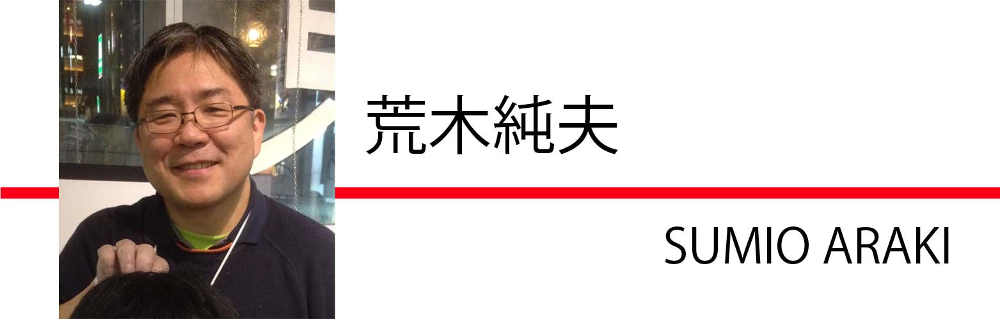

| 1979ポーランド | |
| 荒木純夫 | |
| Nishino Office Inc (2014) | |
東洋エンジニアリング（TEC）に入社して1年目が終わろうという1979年3月、私は行徳の東京湾岸の工場の敷地を借りた、海水淡水化テストプラントの試運転の現場にいた。1年目の6月から年末まで、大阪、韓国と新入社員研修での出張が続き（当時はリッチだったなぁ）、日本に戻ったと思ったら、会社のすぐ近所とはいえ、また現場である。まだ自分の席に1か月半と座ったことがない。試運転は3月末までなので、これでようやく自分の席に戻ることができる。
そんな思いでいた3月下旬のある日、会社から上司が車で30分の現場にいる私を訪ねてきた。
上司「荒木君、ちょっと話があるんだがいいかな？」
私「はい、なんでしょうか」
上司「5月の連休明けから、ポーランド行ってもらうことになったから」
私「はい？？？」
上司「契約で客先に英語でレター出すことになっているんだが、現在駐在している社員と交代でその仕事。彼が現地駐在3年を超えるので、君に行ってもらうことになった」
私「え゛、私、英検2級も持っていないですよ」（当時TOEICはまだなかった）
上司「なに、君なら大丈夫！」
で、ぽんと肩を叩かれて、共産主義政権下のポーランドに9か月の予定で行くことになった。
簡単なもんである。
ポーランドでの滞在先は、ワルシャワからヴィスワ川を100 kmほど下流に下ったプォツク。ワルシャワからは西北に位置する。そこにポーランド最大のコンビナートがあり、敷地内にエチレン及び合成ゴムの原料のブタジエンのプラントを建設するというのが、TECが受注したプロジェクトだった。プラントの設計、機器調達とスーパーバイザー派遣というのが契約内容で、契約先はポーランド政府である。
現地に派遣されたスーパーバイザーが建設工事に当たってアドバイスを文書で提出するのだが、この文書を日本語から英語に翻訳するというのが、出発時に言われた私の仕事というわけである。
出発まで1か月半くらいしかない。でも、前年の10月から12月まで韓国、つまり、海外の工事現場にいた経験はあるにはあるから、まあなんとかなるでしょ。
5月10日快晴、いよいよ出発の日である。
我が社のお客さんで、今回は我が社の協力会社となる四日市の石油化学プラント運転要員の面々10名ほどと新東京国際空港（当時は成田空港と呼称していなかった）で落ち合って、私はポーランドへ向かった。5月の日差しが心地よい。
客先との契約上、航空会社はポーランド航空を使うことになっているのだが、アジアはバンコックまでしか乗り入れていない。そこで、成田からバンコック経由でワルシャワに向かうことになる。バンコックまでは日本航空であった。
今では信じられないが、バンコックまでのフライト、B747機内はスッカスカ、空席だらけ。私は真ん中の5席をひとりで占拠し、肘掛けを上げて横になったりした。
座席がスッカスカであるということは、客室乗務員が相手にするお客の数も少ないということである。すなわち、暇！ 我々の相手しかしていないようなものだから、頼めばすぐに飲み物持ってきてくれるので、我々はがんがん飲み続けた。客室乗務員のお姉様がギャレーから徳利2本ぶら下げて「まだお酒ありますよ～」なんて言ってくれる。
たまりませんなぁ。
さらに、私のシャツの袖口のボタンがポロッと取れたのだが（別にポロシャツではない）、なんと通路に跪き、私の袖口を取ってボタンを付けることまでやってくれた。
いやぁ、天国！
エコノミークラスでのこんな天国フライトには、その後二度と遭遇していないなぁ。しかし、お姉様の薬指には指輪がしっかりはめられていた（がっかり）。
さて、6時間半の天国フライトの後、薄暮のバンコックドムアン空港に到着したべろんべろんの我々一行、ここからワルシャワまでポーランド航空に搭乗する。待ち時間はなんと5時間！ 我々総勢11名は待合室のカーペットの上に車座になり、バンコックまでの天国フライトの余韻に浸りながら、さらに酒盛り開始。既にべろんべろんだった我々には、もはや冷静な判断力と羞恥心はなかった。
気がつけば最終搭乗案内をしているではないか！ あやうく飛行機に乗り遅れるところだった。これが大失敗だった。酒盛りなんかしている場合ではなかったのである。恐るべし共産主義国家、資本主義国家の常識は通用しない。それを直後に思い知ることになる。
あわてて我々は搭乗口に移動し、搭乗の列の最後尾に並んだ。あれ？ そう言えば搭乗手続きで座席を決めた記憶がない。酔っぱらっていても、おかしいなと思いつつ、案内されるままに搭乗した我々は唖然。なんと、座席は自由席ではないか！ 前の方から順に乗客が座っている。1列通路で片側3列座席の機内は、座席確保の混乱で通路は大渋滞！ ひょっとしたら我々の座席がないのではないかと青くなった。
最後尾になんとか座席を確保して着席。しかしまあ、なんと座席間隔の狭いことよ。小柄な私が狭いと感じるんだから、ぶっといポーランド人はいったいどうやって座るんだ？ さらに、頭の上からは水がぽたぽたたれてくる。たまらんなぁ。
出発予定時刻をやや過ぎて、飛行機はようやく動きだした。機体はイリューシン62という、ソヴィエト連邦（ソ連）の機体。これはリアエンジンで、私の座席の窓のすぐ外にエンジンが見えている。いざ飛行機が動きだしたら、やかましいのなんの。なぜ後ろの方の座席が空いていたのか、この時よっくわかった。
午後10時過ぎ、暗闇の中誘導路から滑走路に機体は入り、ようやく離陸開始。滑走路を加速し始める。
しかし、バンコックまでのB747ならとっくに上昇し始めている頃なのに、だらだらだらだら、いつまでも滑走路を走っている。しかもなんとなくトロい。「大丈夫か！」と、だんだんひじ掛けの手に力が入ってくる。もうこれ以上滑走路を走り続けたらやばいんじゃないのと、ぐっとひじ掛けの手に力が入った刹那、機体はふわっと浮き上がった。それがまた、全然上昇していかない。B747の半分くらいの上昇率だろうか。
怖いぞ、全く！
とにもかくにも、機体は次の寄港地ボンベイをめざす。
バンコックまでの天国フライトのバチが当たったのだろうか。日本航空の愛嬌ある客室乗務員とは打って変わり、まるで「仏頂面」という名前の動物の檻に押し込まれたような感じだ。ポーランド航空のごっつい客室乗務員達、一体全体どうやったら、ああいう表情ができるんだ。女性の刑務官が目の前うろちょろしている刑務所といった風情でもある。
食事も、まるで囚人に与えるようだ。トレーを放り投げて行く。しかし、この時の食事の内容を具体的に全く覚えていない。いや、まずかったことだけは覚えている。お酒も飲んだ記憶が無い。おっかなくって、お酒くださいなんて口が裂けても言えない。いや、お酒のサービスそのものがなかったかもしれない。窮屈な姿勢でほとんど寝ていたことしか覚えが無い。一気に酔いが醒めた。
ボンベイ、クェート、アテネを経由し、飛行機はまるで日本の地方空港のようなワルシャワ（ヴァルシャヴァ）オケンチ空港に昼過ぎに到着する。ここまで成田からほぼ1日。体中ばりばり。
飛行機は着陸して滑走路から空港ビルに誘導路を移動していく。ポーランドは共産主義国家であり、普段、日本に暮らしていると接することのない国の飛行機に遭遇したりする。
それにしても驚いた。ふと窓の外に目をやると、そこにはなんと機体にハングル文字が書かれたプロペラ機！ ジェット旅客機全盛の時代に、偉大なる領袖様の国はヨーロッパまでプロペラ機を飛ばしているんかい！
遠い国に来たなぁ。
しょぼいオケンチ空港まで迎えに来てくれた会社の車で、我々は勤務地となるプォツクに向かった。車はぼろぼろのフォルクスワーゲンのマイクロバス2台（このバスがいろいろ事件を起こしてくれるのだが、それについてはまた後ほど）。
共産圏の国々というと、ど派手な赤地の立て看板が街中あちことに、という印象だったのだが、ワルシャワ市内の車窓にはそのような看板がほとんど見当たらない。街の風景がくすんだ灰色一色なのである。東京のど派手な商業主義満載の看板や、ぎんぎらぎんのネオンサインの街並みに慣れた目からすると、全くの別世界。極端に貧相なのである。
走っている車も、日本車なんか当然皆無。フィアットの現地生産車（ポルスキ・フィアット）、デザインがちょっと違って名前だけが違うソ連製のラーダ、国産車のポロネーズといった車がほとんどである。あと目立つのは東ドイツ製のトラバント、それにルーマニアの車かな。たまにメルセデスやフォルクスワーゲンを見かけると、大抵が外国ナンバーの車である。
車はワルシャワ市内、ヴィスワ川沿いを西に向かって走る。舗装路は小刻みに上下に揺れて乗り心地が悪い。いったいどういう舗装をしているのだ！
目的地のプォツクは、ヴィスワ川沿いに下ってワルシャワから北西約100 kmの距離である。相変わらず小刻みな揺れは気になるが、車窓は美しい。ワルシャワ市内の鬱々とした灰色の風景とはうって変わり、人家もまばらな初夏の新緑の森の中を、マイクロバスは快調に走っていく。途中ヴィスワ川を渡る橋があったのだが、橋からの風景はそれはもう絶景であった。我々は、ポーランドのもっとも良い季節の始まりにやって来たのであった。
さて、1時間半ほどかけてプォツクの街に到着。実に落ち着いた雰囲気の街である。それもそのはず、プォツクは1079年から1138年までポーランドの首都だった。ここにソ連からの石油パイプラインがつながっている石油コンビナートがあり、そこに我々がエチレンプラントと合成ゴムプラントを建設している。
マイクロバスは右に曲がって、これから9か月の間、暮らすことになるペトロポールホテルに近づいていく。ホテルの前の通りのポプラ並木が美しい。風景が北海道に非常に似ている。
マイクロバスはホテルのの車寄せに横付けした。実に殺風景なホテルだが、当時、外国人が宿泊できるホテルは指定されており、プウォツクではここにしか宿泊できなかった。フロントで鍵を渡されると、部屋番号は608号室。ポーランド語で「シェイシチセットオーシェム」。今でも覚えている。レセプションに英語ができる女性スタッフがいたけれど、本当にかわいかったな。
6階（日本式では7階）の部屋まで荷物を担ぎ上げて、ドアを開けてびっくり。
なんて、狭いんだ！
ベッドの他に、部屋の余裕は1.5メートル位しかない。鰻の寝床である。当然、シャワーのみ、風呂桶はなし。スーツケースを開けて5箱ある段ボール箱を置くと、居場所はほとんどなくなる。ここで9か月暮らすのかと思うと、うんざりである。しかも、部屋は西向き。ただでさえ北ヨーロッパの夏は日が長いので、夏時間で午後8時では太陽は高く、午後10時でもまだ明るい。日本からのフライトで疲れ切っているのに西日がカンカン照りで、とてもではないが寝つけない。高緯度地方だから太陽の動きは遅く、ようやく薄暮になったのは午後11時過ぎであった。
ポーランドは手強いなぁ。
この頃のポーランドは、正式な国名を「ポーランド人民共和国」と言い、ポーランド統一労働者党による一党独裁の共産主義国家であり、質的にはソヴィエト社会主義共和国連邦（ソ連）の支配下にある衛星国である。
ソ連の支配下の国であるということで、大変困ることがひとつある。英語がほとんど通じないのである！
当時、ポーランド人が学校で習う第一外国語はロシア語であり、英語ができるポーランド人はほとんどいない。彼らができる外国語は第一にロシア語、第二にドイツ語である。だからこれらの言語ができないと、ポーランド語を覚えなくてはならない。「英語ができれば国際人！」なんていうことは、間違ってもないのである。
私が最初に覚えたポーランド語は、自分の部屋番号のシェイシチセットオーシェム（608）。これを覚えないことには、ホテルに帰って来た時に自分の部屋の鍵をもらえない。
切実なのである！
続いて「ジンクイエン（ありがとう）」を覚えて、それから「おはよう」とか「こんにちは」あたりを覚えたと思うだろうが、出現頻度の高い単語は違うのである。次に覚えたのはユートロ（明日）。職場でポーランド人に何か頼むと、真っ先に帰ってくる言葉が、まずこれであった。着任早々「なんだよ！」と思ったものである。
しかしながら、これには理由があった。
後でわかったことであるが、我が社の就業時間は午前9時から午後5時30分までで、12時から1時間昼休みがある。これをポーランドでも適用していた。ところが、客先の就業時間は午前7時30分から午後3時30分までで、昼休みなし。彼らはサンドイッチ等の軽食で空腹をしのぎ、午後3時30分になったらそそくさと家に帰り、そこで本格的に昼食兼夕食を取る。だから、午後になって仕事を頼むと「ユートロ」となってしまう。そりゃ、早く家に帰って食事したいのだから「ユートロ」となるわけである。まあ、仕方ない。
もうひとつ、すぐ覚えた言葉がチェイシチである。これは「やあ！」とか「おっす！」といった意味である。朝職場に着いて、自分の席に座ってしばらくすると、お客のポーランド人が立て続けに我々の部屋の入り口に必ず現れて右手をひょいっと挙げ、「チェイシチ」と挨拶していく。我々も同じく「チェイシチ」と返す。これは本来、目上の人とかに使う言葉ではないが、なかなか便利で、私自身いろいろなところでよく使ったものである。
ということで、チェイシチ！
当時の共産主義国家であるソ連と、その支配下の東欧諸国では、資本主義国家である日本を含めた西側諸国の生活からは想像を絶することが、身近な日常生活で待ちかまえている。
ポーンランドで暮らし始めてすぐ、正確には、ホテルに着いた次の日の朝の出来事であったのだが、早速その洗礼を受けることとなった。
便座に座って用を足し、いざ尻を拭こうと思ってトイレットペーパーに手を伸ばしてぶったまげた。紙がハトロン紙なのである！ 知りませんでしたよ！ 日本だと、再生紙のトイレットペーパーだって柔らかく、吸湿性も良い。しかしながら、ポーランドのトイレットペーパーは褐色で固く片面に艶があり、封筒や包装に使われるのハトロン紙そのもの。かっちかちである！
硬い紙であるから折り曲げた端がうっかり肛門に当たろうものなら痛い。下手をすれば紙で切れて出血するのではないかという、とんでもない代物である。これで尻を拭けというのか！
まさに凶器である。
トイレットペーパーはそれしかないから使わざるを得なかったが、振り返って、よく切れ痔にならなかったし、尻もよくきちんと拭けたものである（お食事中の皆さん、ごめんなさい！）
もうひとつ、紙に関わることで、到着早々、失敗したことがある。
日本から持参した段ボール箱の荷物は、箱の中でさらに紙袋やプラスチック袋に入れて仕分けしていたが、荷解きした時に何も考えずに、日本のつもりで段ボール箱に加えて紙袋やプラスチック袋を捨ててしまった。
これが大失敗だった。
日本だと、店で紙やプラスチックの手提げ袋に入れて商品を渡してくれるのが当たり前である。デパートなんか、過剰なくらい包装して紙袋に入れてくれる。ポーランドでは、袋なんかくれないのである。なんたって、トイレットペーパーがハトロン紙の国である。顧客サービスなんて皆無だし、潤沢に紙やプラスチックがあるわけがない。したがって、買い物袋とか持参しないと、帰りは商品を抱えて、えらいことになる。しまった、と思った時には、時、既に遅し。ホテルの自室のゴミ箱の中は空っぽ、何にも残っていない。お掃除おばちゃん、大喜びで私が捨てた袋を持ち帰ったことであろう。
かつて、日本だって買い物に行く時は、買い物袋を持参するのが当たり前だった。日本も貧しい国だったのである。そんなことを思い出させてくれた手強いポーランドであった。
すでにポーランド航空の機内食で洗礼を受けていたが、日常生活で接する飲食物もポーランドは手強かった。
まず、何と言ってもまずかったのがパンとコーヒーである。パンはパサパサで食べられたものではないのがほとんど。かろうじて「ブーキ」という丸いパンが何とかなったのと、黒麦パンが酸味が効いてまあまあかなという感じ。本当に、どうやったらこんなにまずくパンを作れるのかという代物であった。
コーヒーも、驚くことに、職場の食堂にしゃれたデザインのコーヒーメーカーが置いてあるのだが、口に含むと泥のお湯といった味である。コーヒー独特の香りもしない。出涸らしを再利用しているのかとでも思いたくなった。そもそもどこから輸入しているのであろう。
ホテルのレストランで注文するビールも凄かった。ブランド名は覚えていないのだが、最初に飲んだ時、独特の癖があって思わず「まずい」と言ってしまった。しかも、小瓶なのに2本も飲むとかなり酔っぱらう（まずくても、選択肢がなければ酒飲みは飲むのである）。そんなに酒が弱くなったかなと思ってラベルを見てみると、なんとアルコール度数が14％もある。やはり、ポーランドは手強いのである。
もうひとつ、日本ではお目にかかれない代物が「ヴォーダミネラルダ」、すなわちミネラルウォーターであった。これはかなり強く炭酸を含んでいて、それは別に良いのだが、なんとしょっぱいのである。最初口にした時、思わず吐き出してしまった。
まったく、他に選択肢があったら、絶対手を出さないもの代物ばかりであったが、パンとコーヒーを除き、恐ろしいことに1週間もすると美味しいと感じるようになるのだ。
ポーランドにいる間選択肢がなかったとはいえ、1週間も経つと14％のビールを本当に美味しいと思うようになっていた。独特の癖とアルコール度数の高さが、病みつきになったのである。ミネラルウォーターも、冷蔵庫で冷やして飲むと塩味がちょうどよく、美味しいものだ。
こわいなぁ、慣れって。
しかしである。繰り返すが、選択肢がないから食べたり飲んだりしていたが、パンとコーヒーはどうにも美味しいとは思えないし、馴染めなかった。一党独裁共産主義の大弊害である！ コーヒーは激マズだったのは何度も言及するが、意外なことに紅茶は美味しかったのだ。ラッキー。ところが、今度は、ポーランド人はレモンティーしか飲まないのである。ごくまれに、ストレートのままである。レモンのスライスはあってもミルクを入れたポットがない。
ポーランドは、やはり手強い。
ポーランドに着任して2週間後くらいだろうか、同僚と3人で、会社の車を出してもらって、ショパンの生家のあるジェラゾヴァ・ヴォラに行くことになった。ショパンの生家では、ショパンコンクールの入賞者など優秀なポーランド人、または世界各国の著名ピアニストによるショパンの曲の演奏が、５月から９月末まで祝祭日と、日曜日の午前11時と午後3時に開催されている。この午前11時の演奏を聞きに行った。
ショパンの生家は、プォツクからワルシャワに向かっていくほぼ途中、少しワルシャワ寄りにある。初夏の日差しの中、プォツクの街から1時間ほどのドライブで到着。
コンサートは、引き戸が開け放たれたサロンにピアノが置かれ、聴衆はその庭先の座席に座って聴く。ほとんど屋外コンサートだ。初夏の陽光の下、小鳥のさえずりが聞こえる中でのコンサートである。
名前は忘れてしまったが、ピアニストはアメリカ人女性であった。何を言っているのか、さっぱりわからないポーランド語で、ピアニストと演奏曲目の紹介が始まる。だいたい曲名は日本語で覚えているから、いったいどの曲なのか全くわからない。しかしながら、なかなかの名演で、天気も相まって、すごく気持ちが良かった。
思わず、午後の演奏も聴きたくなってしまった。他の2人は帰るというので、私ひとりだけ残ることにした。ワルシャワまで出れば、路線バスでプォツクに戻れるのはわかっている。まあ、ワルシャワまではこれだけ人が大勢いるのだから、何とかなるでしょ。
で、実際何とかなった。
午後のコンサートが終わり、生家のスタッフとおぼしきポーランド人を捕まえ、英語で「ワルシャワに行くバスはないか」と聞いてみる。その人は英語がよくわからないみたいで、英語のわかるおじさんを連れてきてくれた。そうしたら、
「ここから直接ワルシャワに行くバスはないが、私がワルシャワまでピアニストを送っていく。良かったら、一緒に乗って行くかい？」
え゛゛゛゛、演奏者といっしょにワルシャワまでドライブですか？ 答えは当然「もちろん！！！」である。
やった！
車はポルスキー・フィアット126。日本の軽自動車並のボディサイズである。助手席にピアニスト、後部座席に私が乗った。彼女に相乗りさせてもらうことを詫びる。
車が走り出ししてしばらくして、彼女に「演奏を録音していたんです」と告げた。そうしたら演奏を聴かせて欲しいという。テープデッキをとり出し、再生した。すると、彼女はテープを貸して欲しいという。録音状態が良かったからだろう。1週間後にワルシャワのワジェンキ公園のショパンの銅像の前で待ち合わせることにして、テープを貸した。
彼女のホテルは、ショパンの心臓が安置されている教会の近所だった。そこから私はバスターミナルまで乗せてもらった。降りる時に、彼女に倣って20ズウォティをおじさんに渡した。おじさん、思わぬ収入である。
本当に、なんとかなるもんである。
なお、後日、ショパンの銅像の前で彼女と待ち合わせて、何かあったかと言うと、会ってテープを返してもらっただけであった。
残念。
ジェローネとは、ポーンランド語で「緑」のことである。当時のスラングで、闇レートで交換するアメリカドル紙幣のことを意味する。ドル紙幣は緑色をしているからである。
ポーランドの通貨はズウォティと言うが、当時の公定レートは1ドル＝32ズウォティであった。ちなみに、日本円は1ドル＝200円ほどである。着任早々、我が社の現場責任者のアシスタント・プロジェクト・マネージャーのYさんから「ドルを両替するならアドミ（アドミニストレーション、つまり総務）に言って」と言われた。1ドルを120ズウォティで両替してくれるという。その後、112ズウォティまで落ちたが、要するに、会社で闇レートで交換してくれるのである！
当時、ポーランド経済は、既につま先立ちの状態であり、公定レートの1ドル＝32ズウォティという力はなかった。実勢では4倍近い110から120ズウォティというところが妥当だったのである。ポーランド人はドルが欲しいから、公定レートの4倍でも両替に応じてくれる。当然、違法行為であり、ワルシャワの街頭でも「両替しないか」と声をかけられたりしたが、街頭で両替しているところを、張り込みをしている警察官に見つかると、現金を没収された上に、下手をすれば逮捕される。ところが、国営企業のオフィスの中で、堂々と闇レートでの両替が行われていたのである。
そもそも、ポーランド政府が闇レートを暗黙していて、例えば、外国人が宿泊するワルシャワのホテルでコーヒーを頼むと、旧市街の現地人が利用する喫茶店の4倍の値段はしていた。
したたかだぞ、ポーランド！
しかし、この闇レートでの両替は大変ありがたかった。そりゃ、自分の懐具合が4倍になるのだから、我々日本人はポーランドではお大尽である。いろいろと恩恵を受けることとなる。例えば、ワルシャワ市内の路面電車の運賃は、1回あたり日本円で8円となる。当時、日本の都電の運賃は90円であった。
一度、ワルシャワに行った時に、ズウォティが足りなくなったことがあった。「無名戦士の墓」のすぐ目の前にある、「ホテルヨーロッパ」で食事をした時、ウェイター氏に両替を頼んだことがある。こそっと頼むと、彼は「トレーの上にドルを置いてくれ」と言う。置くと素早くナプキンで隠し、厨房へ戻っていった。
そのままトンズラされたのではないかと不安になり始めた5分後、厨房からウェイター氏が登場し、トレーの上のナプキンをサッとどけると、そこにはドル紙幣の替わりにズウォティ紙幣があった。数えてみると、レートは110ズウォティ。職場での交換レートが大変良いことがわかる。
ちなみに、「無名戦士の墓」は元々ここにあったサスキ宮殿の柱廊に1925年に作られたものだが、1944年のワルシャワ蜂起の後に宮殿はナチスドイツに徹底的に破壊され、現在は無名戦士の墓とその上にある列柱だけが残っている。
ところで、現地駐在の我々には闇レートの両替し放題の大きな特典があった。
当時、ポーランドに入国すると強制的に滞在日数に応じて現地通貨に両替しなければならなかった。大人で1日15ドル、学生で1日7ドルを正規の公定レートでズウォティに両替、しかも、ホテル等のまとまった支払いでは、両替証明書を提示して、公定レートで両替したことを証明しなければならない。さらに、現地通貨のズウォティはポーランド国外持ち出し禁止である。
なんて国だ！
ところが、である。我々はポーランドでの労働許可証を持っていて、その場合、両替証明書の替わりに労働許可証を提示すれば良いことになっていた。すなわち、闇レートでの両替し放題なのである！
いろいろな意味で、ポーランドは手強い。
ミミガー（豚の耳皮）は、沖縄料理のひとつで、豚の耳の皮を使った料理である。（ウィキペディアより）
5月の月末の日曜日、我々は客先よりピクニックに招待された。プォツクの街の郊外である。本当に初夏のポーランドは素敵である。5月でも下手をすればギラギラしている日本の太陽と異なり、日差しはやわらかく、空気は乾燥しているから、風が実に爽やかである。そういえば、９月までの夏の間、曇りの日はあったが、ポーランドで雨に降られた記憶がない。
ホテルからフォルクスワーゲンのマイクロバスに乗って集合場所に着くと、客先のポーランド人達は既に大きな豚の丸焼きを作っていた。豚に棒を突き刺し、炭火の上でゆっくりくるくる回して焼いている。
凄いな。
さて、豚が焼き上がったところで声がかかり、三々五々、ビールやウォッカを飲んでいたピクニック参加者全員、豚の丸焼きを囲むように集まった。衆人環視の中で、丸焼きを作っていたポーランド人スタッフのひとりが、豚の耳をさっとナイフで切った。豚の耳は当然希少であり珍味であるから、彼は敬意を表して切った耳を、我が社の現場総責任者に差し出した。ところが、我が現場責任者のアシスタント・プロジェクト・マネージャーのYさんは目を引きつらせて後ずさりしてしまった。しかたがない、彼は隣にいた我が社のナンバー2の工事責任者に振る舞おうとしたところ、その彼も後ずさりしてしまった。その隣の日本人も、さらにその隣の日本人も、である。
失礼だよな！
見かねた私は一歩前へ出て手を差し出し、お客のポーランド人から耳の切れ端を受け取って食べた。
実に、デリシャス！
それにしても、我が社の上司達は親睦を深めて仕事をうまく進めるということを、どう理解しているのだろうか？ 食べ物は、基本中の基本である。
我が父は、海外渡航が自由化される前の昭和34年（1959年）から海外出張を繰り返していて、私は色々と土産話を見聞きし、お客のボリビアの外交官を我が家に招いたなんていうこともあった。子供の頃のこういう経験や環境が、数十年後に活きた。子供は親の背中を見て育つというが、しみじみ実感した瞬間であった。
話は変わるが、お客のポーランド人に言われたのだが、日本人が部屋に近づいてくると、すぐわかるという。靴のかかとを歩く時にズッズッと、必ず引きずって歩くからである。確かに、ポーランド人は、そんな歩き方をしない。私はかかとを引きずるような歩き方をしないから、多分話してくれたのだろう。言われるまでは私も全く意識をしていなかった。
無くて七癖、外国人から指摘されて初めてわかる日本人の癖があるものである。
1978年10月、ローマ教皇はポーランド人のヨハネ・パウロ二世（ヤン・パヴェウ・ドゥヴァ、ドゥルギかもしれない）になった。455年ぶりの非イタリア人にして史上最初のスラブ系教皇である。
ポーランドに来てから3週間、6月最初の週末は暑かった。最高気温は32℃、6月2日の土曜日から4日までの3日間、真夏日が続いた。この夏の真夏日はたったこの3日間だけであった。
この真夏日に合わせたかのように、6月2日から4日にかけて、なんとヨハネ・パウロ二世が教皇に前年就任して以来、初めてポーランドに凱旋することになった。「宗教は敵」の共産党、すなわちポーランド統一労働者党にとって、最も好ましからざる人物である。かと言って、ローマ教皇を入国拒否するわけにはいかない。国民の約95%がカトリックであり、うち75%が敬虔な信者であるというお国柄、我がポーランド人が教皇になったんである。その熱狂ぶりは容易に想像がつく。もしも入国拒否なんてしようものなら、間違いなく暴動が起きる。
で、どうなったか。
まずこの3日間、ワルシャワ市内への交通はすべて遮断され、地方からワルシャワ市内へは入れなくなった。同時に、アルコール類の販売が禁止になった。
ここまでだったら、まあそうだろうなという規制である。ところがである。政府の規制はそれに留まらなかったのである。
当時、ポーランドにコカコーラはなかったが、ペプシコーラはあった。そのペプシコーラが、なんと発売禁止になったのである！ なんで？
全く謎な国である。理由を考えてみた。
アメリカ資本主義の権化であるペプシコーラも発売し続けたら、共産主義の敵の宗教との相乗効果で、ポーランド統一労働者党にとって、ろくでもないことが起きるに違いない。だったら、ペプシコーラ発売禁止！
そんなことしか考えつかない。
しかしだね、今は真夏日である。何もこんな時にビールとペプシコーラ、ともに発売禁止にするこたぁないであろうが。教皇のことをちょっと恨めしく思った。
ワルシャワが戒厳令みたいな状態になっている中、そんなこととは関係なしに、私はポーランドに一緒にやってきた四日市の石油化学プラント運転要員のひとりと、1泊してトルンに遊びに行くことにした。彼が絵を描きに行くのに付き合ったのである。プォツクからヴィスワ川を下って西に約100 km、ちょうどワルシャワの反対である。
途中のトルンまでは、我々は鉄道で行くことにした。プォツクの駅で列車を待っていると、やって来たのは蒸気機関車に牽引された客車。思わず蒸気機関車に向けて写真を撮ったら、機関士が降りてきて「写真を撮ってはいけない」と言っている。なんでポーランド語がわかったのかと思われるだろうが、こういう時って、雰囲気でなんとなくと言っていることがわかったりする。まあ、言っているだけでフィルム没収とかはなかったのであるが、あの写真、どこに行ったのだろう？
トルンは、現在旧市街が世界遺産に登録されている、中世の佇まいを現代に残している落ち着いた街で、コペルニクスの出身地でもある。我々は、街の中心の市庁舎広場に近いホテルに投宿した。
さて、チェックインして部屋に荷物を置いたが、それにしても暑い。なんたって真夏日が1年で3日しかないような国だから、冷房なんてあるわけがない。部屋の中に熱がこもっている。部屋の中にいても暑いし、しょうがないので、早速街中を歩き回ってみる。
市庁舎の前にコペルニクスの銅像があり、銅像を目指して市庁舎にたどり着くと、市庁舎の建物に沿ってテントが張ってある。ポーランド名物長蛇の行列ができているので、何だろうと思ってテントに近づいてみると、なんと、ビールを売っているではないか！
あれ？ アルコールは販売禁止ではないの？ しかし、目の前で例のアルコール度数14%のビールを売っている。
本当に訳のわからない国である。
謎はさておき、ビールが飲める！ 我々は「やった！」と思って50メートルはあるかという行列の最後尾に着いた。
10分経った。列は意外にも早く短くなって行く。すでの40メートルになった。
20分経った。我々の前の列の長さは30メートルほどであろうか。
30分経過。あと20メートル
40分経過。あと10メートルである。人数にして20人弱というところであろうか。よし、あともうちょっとだ。
50分経過。あと10人。そして、あと5人、あと3人。
え、何？ ちょっと待て。ビールがない！
がーん！
我々の前、あと3人というところで、ビールが売り切れてしまったのではないか！
ショック！
我々の後ろにも50メートルほどの行列ができていたが、ビールが売り切れたとわかった瞬間、行列は30秒足らずで、あっという間に雲散霧消。このあきらめの良さは本当に凄い。それだけだめもとに慣れているのだろうな。
くそー、今日はアルコールにありつけないのかと思い、しかたがないのでホテルのバーに戻って、我々はウォッカの入っていないブラディーマリーを注文した（別名、トマトジュースとも言う）。ところがである。なんと出てきたのは、普通のウォッカの入ったブラディーマリーであった。
ポーランドはしたたかである。
あれ？ 絵はいつ描いたの？
「荒木さん、グダンスク行かない？」
ローマ教皇の大騒ぎが収まった直後、協力会社の人から誘われた。ひとりでポーランドに来ている協力会社の人達で、タクシーをチャーターして、グダンスクまで週末に1泊２日で遊びに行くと言う。タクシーは2台、1台当たり200ドルである。これを4人ずつで割って1人50ドルである。
安い！
プォツクからグダンスクまで、相変わらず小刻みな上下動のある道路を、ポルスキ・フィアット125pのタクシーは快調に飛ばし、6時間ほどでたどり着いた。曇り空であったが、車窓は平原が続き、気持ちが良い。こわいもので、この小刻みな上下動に体が慣れてきている。
グダンスクはポーランド北部、バルト海に面した港湾都市である。後年、ここで「連帯」が立ち上がった。ここは、ポーランド王国だったり、ロシア帝国に占領されたり、1793年のポーランド第二次分割でプロイセン王国になって名前がダンツィッヒになったり、ナポレオンが元気だった時は自治都市だったり、またプロイセン王国になったり、第一次世界大戦後は自由都市になったり、第二次世界大戦中ナチスドイツになったりして、1952年にようやくポーランド領になり、実に159年間ポーランド領ではなかった凄い歴史を背負った都市である。
そもそも、ポーランドという国そのものがロシア、プロイセン、オーストリアに分割されて1795年に消滅し、第一次世界大戦後の1918年に復活し、1939年に第二次世界大戦が勃発するとドイツとソ連に分割されて再び消滅し、1952年に戦前より西に国土がシフトしてポーランド人民共和国として再び復活したという（ソ連が分捕った領土は戦勝国につきそのままで、ベラルーシとウクライナ領となった）、それはもう凄まじい歴史の国である。
第一次世界大戦後、グダンスクがドイツ領でなくなり自由都市となったことによって、東プロイセンは分断されてしまった（なぜ東プロイセンなどというドイツの飛び地があるのか、十字軍の時代に遡って長々と書くことになるので割愛。ちなみに現在はロシアとポーランドで山分けしている）。これをヒトラーは口実に使い、「ダンツィッヒ回廊の奪回」を掲げ、1939年9月1日、ポーランド軍が当時ドイツ領にあった鉄塔を爆破したという話をでっちあげ、ポーランドに攻め込んだ。
ナチスドイツの攻撃はグダンスク郊外、グダンスク湾に面したヴェステルプラッテのポーランド守備隊への、親善訪問という名目で近くに停泊していたドイツの戦艦シュレスヴィヒ・ホルシュタインによる、宣戦布告なし突然の砲撃と、それに呼応したドイツ機甲部隊がポーランド領に進撃し、開始された。
第二次世界大戦の勃発である。
タクシーはグダンスクを通り過ぎて、ソポト、グディニア（これら3都市を三連都市と言う）を通って、ヴワディスワヴォヴォへ向かう。ここで車を降りて我々を駅まで連れて行き、列車に乗せた。どこへ行くのだろう？
市街地を走り抜けた列車は、ほどなく砂洲の中を走り出した。両側は有刺鉄線に囲まれている。その途端、ドライバーのひとりが「写真は撮るな」と言った。軍事施設があるようだ。突然の霧が鬱陶しさを増幅する。
地図を見ればわかるが、グダンスク湾の入り口には砂洲があり、砂洲の先端まで鉄道が通っている。我々は先端のヘルへ向かっていた。
終点で列車を降りると霧も晴れており、我々は岬の先端の展望台に向かった。ここから対岸のグダンスクが見渡せる。「第二次世界大戦開戦の地」の碑もある。大戦中とその後のポーランドが置かれている状況のことを考えると、そこに立っているだけで気分が重たくなってくる。
砂洲からの帰り道、我々はソポトで寄り道して、夏に音楽祭が開催されるという野外音楽堂に立ち寄った。座席に座ってしばしぼーっとしていると、女子高生と思しき集団がやって来た。そのうちのひとりが舞台の真ん中に立ってお辞儀をすると「森へ行きましょう（シュワ・ジェヴェチカ）」を歌い始め、踊り出した。
かーわいいーー！！！
ナチスドイツと連合国軍の激しい戦闘で、グダンスク市街の大半は破壊された。
しかしである。これはワルシャワの旧市街もそうなのであるが、ポーランド人は、執念でグダンスク旧市街を見事に復元した。歩き回っても、そうであると知らなければ復元された市街地だということは全くわからない。目の前に広がるのは中世の佇まいを残す、北国の港湾都市に共通する、憂いを含んだ街並みである。古い由緒ある建物をあっさり壊してしまう日本人とは、大違いだ。ポーランド人の自分たちの文化に対する愛着と執念には敬服する。
毎時、市役所の時報の鐘が鳴るが、これが哀愁を帯びていて街並みに実に合う。思わず聴き惚れてしまう。
ホテルにチェックインしてしばらく休んでいると、外はまるで明るいのだが、気がつけばもう7時過ぎ。タクシードライバーの2人は、我々を魚料理のレストランに連れていってくれた。
基本的に、ポーランド料理は肉が主体なのであるが、魚を食べないわけではない。なんとクリスマスには家庭料理として鯉を食べるのだが、プォツクには魚料理のレストランなんて1軒もない。グダンスクは流石、港町である。魚料理のレストランがある。ところが、内装は実に殺風景、安っぽいテーブルと椅子で高級レストランという風情ではない。今から考えると、戦後33年、町並みの外観は復元したが、内装まではまだとてもということだったのだろうし、タクシードライバー達もそんなに高級なレストランに行ったことがなかったのであろう。ポーランドは決して豊かではなかった。
しかし、料理はなかなかおいしかった。魚は鱈だったと記憶しているが、ソテーがうまくされていた。プォツクでは、レストランでこういう料理にはお目にかかれないので、ありがたかった。日本人は魚が好きということをドライバー達も知っていたのだ。
グダンスクで魚料理を堪能したが、ワルシャワにもたった1軒だけ、魚料理レストランがあった。ここはグダンスクのレストランより内装が洒落ていて、お値段も少々高かった。鯉もメニューにあった。
しかしながら、このレストランで特筆すべきメニューは、エスカルゴである。聞くところによるとポーランドはエスカルゴの主要な産地で、フランスにも輸出しているという。そのエスカルゴをこのレストランで食べられるのである。
ポーランド人は魚は食べるが、貝は牡蛎を除き、全く食べない。したがって、貝の親戚であるエスカルゴが食べられるというのはありがたい。しかし、外国人相手のホテルのレストランのメニューにもエスカルゴはなく、ワルシャワの街中のこのレストランでしか食べられなかった。
不思議である。
そう言えば、この魚料理レストランのすぐ近所に食材屋があって、そこでベトナム製のえびせんべいが売られていた。油で揚げるとふわっと膨らむやつである。かつて父が東南アジアの出張のおみやげに買ってきてくれたので、知っていた。魚介類の乏しいポーランドでは、これですら、ありがたかった。
ポーランドに着任して早々、1.5 cm角の小さい切手のようなチケットを渡された。何だろうと思って質問すると、砂糖の配給チケットだという。月1回もらえる。
かつて、日本も配給制度があった。調べてみてびっくりしたのだが、戦時体制の米穀の配給は制度的には1982年まで存在していた。ただし、自主流通米という抜け道があったので有名無実であったが、ポーランドの砂糖は掛け値なしの配給である。チケットを持っていないと砂糖を手に入れられない。
労働許可証を持った外国人にも支給されるんだなぁ。
最初にもらったチケットは「砂糖なんて使わないからいいや」と思って、捨ててしまった。しかし、すぐ気がついた。ポーランド人にあげたら喜ばれるではないか！ ということで、6月分は我々の昼食を作ってくれているおばちゃん（と言っても黒髪のすごい美人！）に「どうぞ」と差し上げたら、満面の笑みで喜ばれた。このおばちゃんの作ってくれる昼食は本当においしかった。ポーランド家庭料理と、たまに日本人の誰かが教えた日本風の料理である。
朝食は、宿泊しているペトロポールホテルのレストランで食べていた。牛乳、ジュースにパンという、典型的なコンチネンタルの朝食に、玉子がついている。ウェイターまたはウェイトレスが玉子をどう調理するか聞いていく。選択肢は目玉焼き、スクランブルエッグ、オムレツのいずれかなんであるが、これが不思議なことに、たったこれだけの選択肢なのに毎日食べていて、全く玉子に飽きない。玉子は偉大である！
さて、夕食である。
最初の1週間くらいはホテルのレストランで食べていたが、すぐに飽きてくる。聞けば、会社はホテルから歩いて5分くらいの所に「談話室」と称して家を借りていた。ここには台所もあり、調理ができるという。そこで、談話室を利用していた、主に協力会社の人達に混ぜてもらい、交代で食事を作らせてもらうことにした。グダンスクにともに旅行した人達であり、気心も多少は知れている。
野菜はキャベツ、じゃがいも、人参といったところで、他に選択肢はほとんどない。これらの野菜は、近所で週に3回やっていた市場で購入した。近在の農家が屋台を出して、野菜を売るのである。夕食を作り始めて1か月もすると、キャベツのみじん切りとかじゃがいもの皮むきとか、手際よくできるようになっていた（今はできないけれどね）。
また、1週間に1度、月曜日に、職場で希望者に食肉を有償で分けてもらっていた。これは夕食の貴重な食材である。昼食用以外に余分に食肉を注文して、分けてもらっていたのである。
時々、スーパーマーケットで羽毛を取って血抜きしただけの、丸のままの鶏肉を買い、さばいた。1匹目をさばいた時は気持ち悪かったが、馴れとは恐ろしいもので、2匹目以降はなんの抵抗もなくさばいていた。鶏は本当に美味しかった。ポーランドでドライブしていると、路上にも元気に走り回っている鶏を良く見かける。そりゃ、鶏が美味しいわけだ。
なんとスーパーマーケットでは米も売られていた。ポーランドでは栽培していないから輸入されているわけだが、どこから輸入されているのだろう？ 残念ながら、それはそれはひどい米だった。
日本から持ち込んだ炊飯器で炊いていたのだが、何が大変って水加減がものすごく難しいのである。お米に対して水が適量より少しでも多いか少ないと、べしょべしょになるか芯ができてしまう。シビアなのだが、水の量が適切だと、意外に美味しくご飯が炊けた。そこで、内釜にマジックペンで水の適量の深さを書いた。線を書いてからは、バッチリであった。
それから、スーパーマーケットに併設されて、ポーランド全国で4軒しかないという魚屋が、なぜかプォツクにあった。魚屋と言っても、冷凍庫がぽんと置いてあるだけだが、売っているものは冷凍の鱒と烏賊！ 鱒はまだわかるが、烏賊なんてポーランド人食べるの？ 買っていたのは我々日本人だけのようにしか見えず、その魚屋でポーランド人が買い物をしているのを見たことがない。
謎である。
これらに、日本から持ってきたインスタントラーメンとかいった食材が加わる。もちろん醤油はある。本当に醤油は偉大だ。なんでも美味しくしてくれる。
今振り返ってみると、乏しい食材で本当にいろいろ料理を作っていたなぁ。
スタレ・ミアストとは、ポーランド語で旧市街という意味である。特に、中心部の市場広場は四方を瀟洒な建物に囲まれており、レストランや喫茶店に屋台もある。大道芸もやっていたりする、ゆったりした時間が流れる洒落た広場である。一方、ナチスドイツがユダヤ人を押し込めたワルシャワ・ゲットーは、旧市街の北西にあった。
6月になると土地勘もできて、1人で週末にワルシャワまで日帰り、または1泊で遊びに行くようになった。交通手段は主に長距離バスである。たまに会社の車を運転して出かけていた。
ワルシャワの街はヴィスワ川を挟んで広がっており、左岸が中心地となる。観光名所の筆頭がヴィスワ川左岸沿いにある、翌年世界遺産となった旧市街であり、入り口の王宮広場から南に新世界通りが続き、周辺にはポーランド国立歌劇場、無名戦士の墓、ワルシャワ大学、ショパンの心臓が安置されている教会と続く。ポーランド国立歌劇場と無名戦士の墓の周辺には、ヴィクトリア・インターコンチネンタル、ヨーロッパ、ブリストルといった外国人用のホテルもある。この辺りは散歩を楽しむのに最高である。
旧市街からちょっと離れて3 km南にはワジェンキ公園があり、ショパンの銅像の前で夏の毎週日曜日に、無料のコンサートが開催される。そうだ、無名戦士の墓の前では、やはり毎週日曜日、軍楽隊による国歌の演奏に合わせたパレードも行われていた。国立歌劇場では日本円にして300円弱でバレエ等のコンサートを楽しむこともできる。ワルシャワに出てくると、金をかけずに週末を楽しむことができるのだ。
旧市街の入り口は王宮広場になっており、前述した新世界通りへと続く。その下に立体交差で道路が通っていて、ヴィスワ川対岸のプラガ地区へ繋がっている。すなわち、ここは交通の要衝なのだ。
第二次世界大戦勃発時、1939年9月のナチスドイツによるポーランド侵攻において、旧市街は真っ先に攻撃され、特に王宮は、砲撃の格好の的となった。この時点で旧市街はかなりの被害を受けたが、1944年の8月から10月までのワルシャワ蜂起で主戦場となり、さらに蜂起終結後のナチスドイツの報復により、計画的に徹底的に爆破され、破壊された。
第二次世界大戦後、ワルシャワ市民はそこから立ち上がり、細部に至るまで復元した。王宮広場の、市場広場に至る通りの角に募金箱が置いてある。旧市街の復元作業は、いまだ完了していないのである。王宮の建物内部を窓越しに覗くと、中はがらんとして何もない。ここから元の王宮のように内装を復元できるのだろうか。
市場広場に向かって通りを歩くと、建物の前に徹底的に破壊された当時の写真が掲示してある。その写真を見ると暗澹たる思いになるのだが、目の前の建物は見事に復元されている。
ワルシャワ市民のその執念に、ため息が出る。
しかし、裏通りを歩いて愕然とした。注意深く建物を見ると、ワルシャワ蜂起の傷跡が残っている。建物の庇を支える持ち送りに、片側からしか弾痕が付いていないのである。つまり、ナチスドイツは重火器をぶっ放したが、蜂起軍は撃ち返していない。圧倒的な火力を持ったナチスドイツに対して、ろくな武器もなくワルシャワ国内軍と市民は戦ったのである。
ワルシャワ蜂起はプラガ地区に迫ったソ連赤軍を当てにして、1944年8月1日に開始された。ドイツ降伏の9か月前である。しかしながら、ワルシャワ蜂起はソ連と対立するポーランド亡命政府が主体となって開始されたため、ソ連は傍観を決め込んだ。戦後自分たちの支配下にポーランドを置くのに邪魔なポーランド亡命政府寄りのポーランド人を抹殺するためである。ソ連の目論見通り、10月２日にワルシャワ蜂起は鎮圧された。
ろくな火器もなく物資の補給もなく、ポーランド人達の絶望的な戦いは、いかばかりであったか。
復元された旧市街は、見た目の華やかさの裏に、そんなことをずしんと感じさせる街でもある。
雲助（くもすけ）とは、江戸時代に宿場や街道において荷物運搬や川渡し、駕篭かきに携わった人足のこと。
人手不足から江戸幕府は1686年（貞享3年）に出所の知れた浮浪人に限って人足とすることを許可し、彼らは宿場人足と呼ばれた。そこに混じって出所の知れないモグリの宿場人足が横行し、たかり、ぼったくりなどを行なう、たちの悪い無頼の者も多かった。彼らを雲助と蔑称したが、次第に宿場人足・駕篭かきと混同されて使用された。（ウィキペディアより）
転じて、遠回りしたり正規運賃以外の金額をぼったくるタクシードライバーのことを、雲助と呼ぶ。
ワルシャワ市内はトラム（路面電車）の路線が網の目のようにあり、路線を覚えて切符の買い方を知れば、安くて便利な交通手段である。切符は街中にあるキオスクで売っていて、束になっている。切符を1枚ちぎって、車内の日付刻印器に入れて日付を印字し、有効にする。しかし、初めの頃は切符をどこで売っているかわからないし、路線も良くわからなかった。
2回目のワルシャワへの片道1時間半の路線バスの旅は、ショパンの心臓が安置されている聖十字架教会に寄り、続いてワジェンキ公園の屋外コンサートに行くことを計画した。トラムを使うとコンサートに間に合う自信がなく、教会まではタクシーを使うこととし、バスターミナルの10人位列ができているタクシー乗り場から、聖十字架教会に向かった。運転手は品の良い人で、距離にして2 km位、運賃は5ズウォティで、正規のレートで40円弱、闇レートで10円弱といったところか。
ちなみに、ポーランドではタクシーは個人営業が認められており、一方、5人を超える従業員の民間企業は認められていないので、ほとんどのタクシーが「個人タクシー」であった。
さて、問題はその帰りである。
ワルシャワに遊びに行くと言ったら、周りの人達からワルシャワのヴィクトリアホテルにドルショップがあるから、たばこを買ってきてくれと頼まれていた。外国人向けのアメリカドルでしか買い物ができないショップである。
当時ポーランドでは、たばこを吸わない私でも「これはひどい」とわかる、辛いなんてもんではない独自ブランドのたばこと、ライセンス生産しているマールボロがあった。このマールボロにしても、とんでもない代物で、机の上でとんと叩くと、たばこの葉が5 mm位沈み込むようなスカスカのうえ、味もよろしくない。そこで、ドルショップで売っている、外国から輸入したたばこを買ってくるよう頼まれたのである。
買い物を終えると、プォツク行きの最終バスの時刻まで30分しかない。そこで、帰りもまたバスターミナルまでタクシーを使うことにした。
通常、どこの国でもその都市の最高級ホテルにいるタクシーは安全であり、安心して利用することができる。ヴィクトリアホテルはワルシャワどころかポーランドにおける最高級ホテルであり、まだ土地勘がないこともあり、街頭でタクシーを捉まえるのは困難と考え（実は、ポーランドで流しのタクシーをつかまえるのはまず無理でもあった）、ホテルのタクシー乗り場に向かった。
ところがである！
乗り場に5台並んでいるタクシーのドライバー達を見て「これは、まずい」と思った。全員目つきが悪く品がない。資本主義国家の常識は通用しないのだ！
だが、背に腹は代えられない。ワルシャワ市内の短距離だし、ポーランドだったら拳銃を突きつけられることもないだろうしということで、先頭に止まっていた、小太り中年親父のドライバーのタクシーに乗り込んだ。
タクシーはバスターミナルに向かって動き出した。で、早速やらかしてくれた。「煙突」をやっているのである。
「煙突」とは空車レバーを倒さず、タクシーメーターを動かさないことである。
現在のタクシーメーターは電子式でボタンを押すだけだが、当時の機械式メーターにはレバーがあった。レバーが立っているのを煙突に見立ててこういう言い方をする。空車状態で走行するので、乗客には目的地までの運賃がわからなくなる。雲助ドライバーが運賃をぼったくるための、常套手段である。
タクシーは10分足らずでバスターミナルに着いた。行きにタクシー運賃の相場を把握していたし、まあしようがないかと色をつけて4倍の20ズウォティ紙幣をドライバーに、だまって渡した。そうしたら、なんと彼は「こんな金額で足りるか！」と渡した紙幣を片手で握りつぶし、私の顔めがけて投げつけ、紙幣はサングラスに当たって床に落ちた（場の雰囲気で言っていることはわかる）。「ほぉ」と思った私は無言で床に落ちた紙幣を拾い上げ、ドアを開けて下車し、思いっきりドアを叩きつけるように閉めた。そして、ゆっくりとバスターミナルの切符売り場に向かって歩き始めた。
慌てたのはドライバーのおっさんである。東洋人の若造と見下してびびらせたはずが、まさか私がそんな行動を取るとは思わなかっただろう。私を追いかけてきて、切符売り場の列の最後尾に並んだ私に追いついた。
彼は小声で周囲に気がつかれないように「運賃を払え！」と言い、私は無視してそっぽを向いていた。そうしたら、目の前の警官を指さして「お巡りに言いつけるぞ！」と言っている。
全く、良く言うよ。不法行為を働いているのはあんたではないか。
私がさらに無視していると懇願する声になり、「お願いだから、さっきの20ズウォティでいいから、払ってくれ」と言い出した。正規の運賃が5ズウォティなのに、面の皮が厚いおっさんだ。
当然、私は支払うつもりはなく、無視した。彼は私のそばにしばらく佇んだが、ついに諦めてタクシーへ戻って行った。
よし！ タクシー運賃踏み倒し成功！
聞くところによると、私がポーランドに着任した半年ほど前、極真空手がポーランドに道場を開いたのだそうだ。そのためか、日本人は皆、空手ができると思われていたようだ。加えて、私がサングラスをかけていたものだから、思わぬ行動をとった私に、おっさんは相当びびったようだ。
治安の良い国だからこそ、できる芸当であった。
ということで、よい子は真似をしないように！
ワルシャワに行く時には、たばこを買ってくることを頼まれるようになり、月に1回から2回はヴィクトリアホテルのドルショップに通うようになった。
ドルショップは、ソ連及び支配下の東欧諸国が、外貨稼ぎのためにアメリカドルを持った外国人向けに設けたショップである。
ポーランドでも外国人が立ち寄りそうな観光地等にドルショップがあり、ワルシャワの場合、Pewex（ペヴェックス）という名のドルショップが、ヴィクトリアホテルにあった。輸入品のたばこ、高級酒に電化製品、ポーランド名産の琥珀の装飾品や、ズブロッカ等の酒が売られていた。
ドル紙幣で買い物をすると、当然小銭のお釣りが発生する。で、硬貨を期待していると硬貨でお釣りをくれない。なんと、「ボン」と呼ばれる、ポーランド国内のドルショップでしか通用しない、質の悪いよれよれの「子供銀行」の紙幣のような紙片を渡されるのである。
再度、なんて国だ！
ところがである。
ワルシャワのドルショップでは、なんとダイナースクラブのクレジットカードが使えた！
当時、私の父がたまたまダイナースクラブの会員で、ポーランド出張にあたり、家族カードを用意してくれた。ワルシャワのドルショップで利用できるなんて知る由もなかったのだが、このカードが大活躍することとなった。
たばこ購入の依頼者からはドル紙幣を受け取り、ドルショップでの買い物にはクレジットカードを使う。すると、私はドル紙幣を簡単に入手することができる。ポーランドではドル紙幣を持っていると何かと便利なので、これは本当に助かった。
しかし、クレジットカードなんてものはある意味、資本主義経済の権化なのだが、それが共産主義国家ポーランドのドルショップで利用でき、それもダイナースクラブカードだけである。
本当に訳のわからない国だ。
そういえば、一度珍しくドルショップに日本人観光客がいたことがあるんだが、どうやって買い物すれば良いのかわからないようなことを会話していたので教えたら、睨みつけられた。
何それ？
外国来たから、日本人と会話したくないんですかね。でもね、その後私が教えてあげた通りのことをしている。失礼だろ！
ところで、当時物資がないポーランドではあったが、時々、ワルシャワには「えっ！」と思うようなものが、ドルショップ以外で売られていた。
例えば、東ドイツ製のポーランドの鉄道車両の模型である。これは本当に作りが良く、精密にできていた。
それから、ポーランドは良質の琥珀が有名で、装飾品がドルショップで売られていた。旧市街に琥珀のショップがあり、ドルショップよりはるかにデザインセンスの良いものが売られていた。
しかも、闇レートで買えるからすこぶる安い。もちろん、ドルショップ以外ではクレジットカードは使えないから、支払いは現金である。
さて、我がプォツクにも、我々が宿泊している外国人用ペトロポールホテルの真ん前に、ドルショップがあった。
しかしである。ワルシャワでは店内には外国人しか見かけなかったが、というか、ドルショップでは外国人しか買い物できないはずなのだが、プォツクのドルショップでは、客のほとんどが、地元のポーランド人であった。ポーランド人はドルショップで買い物できないはずなのになぜ？ しかも、彼らはどうやってドル紙幣を手に入れているのであろうか？
彼らポーランド人がドルショップで買い物をする目的はただひとつ、ウォッカを購入するためである。ドルショップの入り口には、しばしば待ち行列ができていた。おそらくウォッカが入荷した時であろう。なぜ彼らがドルショップでウォッカを購入するのかというと、闇レートで入手したドルで支払っても、街中の酒屋で購入するよりウォッカが安かったのである。
ポーランド、何かおかしいぞ！
実は私、高所恐怖症なのである。高い所が苦手。そんな私がなぜプラント建設の会社に勤めてしまったのか、着任して1か月経って、後悔する羽目になる。
石油化学プラントに行くと、高い塔が目立つが、これは精留塔と呼ばれ、蒸留が行われる。ポーランドのエチレンプラントでも63mの塔があり、中に棚段が設置されていて効率良く蒸留を行うようにしてある。この棚段には直径6cmの穴がたくさん開いていて、下から気体が上がってくるとパカパカ開くキャップがついてる。
このキャップがちゃんとついているかどうか確認するのを手伝えと言われた。
確認作業は塔のてっぺんに上り、そこから中に入って下に降りていくという。まず、上に昇るのが恐怖である。周りを簡単に囲った梯子を上っていかなければならない。頂上に近づくにつれ、風は強くなり、なんとなく揺れている。景色は良いに違いないが、全く良い気持ちはしない。
なんとか頂上にたどり着いて、開けてあるマンホールから中に入る。中は真っ暗で、棚段の2か所板が外してあって、50cmと1mの空間ができている。ここを降りていくことになるのだが、63m下まで、まっすぐに穴が開いているのだ！ 真っ暗で下が見えないからいいようなものの、見えていたら絶対降りられない！ 無理！
棚段の間隔、約50cm。1つ下の棚段に脚を下ろして上半身を両肘で支え、降りていく。命綱もなし。
あっと思ったら、胸ポケットに入れていたサングラスがスルッと下に落ちていってしまった。こういう作業をする時はポケットに何も物を入れないというのが鉄則なのだが、すっかり忘れていた。5秒位してから、下からカシャンと音がする。
怖いよう！
結局、上から下まで暗闇の中を恐怖で顔を引きつらせながら、必死に降りていっただけで終わってしまった。
私の前任者は家族を帯同しており、5歳の男の子がいた。6月いっぱいまでポーランドにいたので、その男の子と散歩をしたりした。
ポーランド人はソフトクリームが大好きである。彼と散歩していると、ヴィスワ川に近い公園にソフトクリームを売っているワゴンを見つけた。私は彼に「ソフトクリーム食べる？」と聞くと「うん！」という返事。しかしながら、私はソフトクリームを買うためのポーランド語ができない。そこで彼に「ソフトクリーム買ってきてくれる？」と頼んだ。ベンチに座って彼を見ていると、お店のおじさんに、淀みなくソフトクリームを2個頼んでいる。鮮やかなもんである。
彼は人生の半分をポーランドで暮らしているわけだが、自分の生活にとって必要なポーランド語は覚えている。完璧なバイリンガルである。子供はあっという間に言葉を覚えるとは聞いていたが、目の当たりにすると本当に凄い。
しかしながら、これで日本に帰るとポーランド語を使わないから、あっという間に忘れるんだろうな。10歳未満で覚えた外国語は、跡形もなく忘れてしまうという。ちょっと残念である。
私の仕事は、お客に提出するレターを日本語から英語に翻訳することであるが、お客に渡ったレターは、英語からポーランド語に翻訳しなければならない。したがって、私と同じように、英語からポーランド語に翻訳する担当者がいた。
担当者は60過ぎかというおじさんで、若かりし頃、ポーランドがソ連の支配下に置かれる前に英語を勉強したといった感じである。
たまに、おじさんのいる部屋に、直接、私がレターを届けることがあり、話好きなおじさんは、私が訪ねていくと必ず「まあ、そこに座れ」と席を勧め、紅茶を入れてくれた。もちろん、レモンティーである。
ポーランド人は、日本人が大好きである。なぜなら、ソ連（当時）としてポーランドを支配している憎きロシア帝国に、日本が戦争で勝ったからである。おじさんは「ポーランドと日本は隣国だ。間に何か変なのがあるが」なんてことを言ったりする。
ある時、おじさんは「山本五十六の乗った飛行機は、どうやって撃墜されたか知っているか？」なんて突然言い出した。
黙っているとおじさんは
「山本五十六の乗った爆撃機が離陸したのを知ると、36機のグラマンが飛び立って撃墜したんだ。36機だぞ！」
と説明してくれた。
びっくりである！ 日本人の私だって知らないことを、ポーランド人がなんでそんなに詳細に知っているのだ！
ポーランド人の日本好きは、筋金入りである。
さて、おじさんに限らずポーランド人と雑談を始めると、必ず出てくるのが政治を揶揄した「小話」である。例えばこんな具合である。
ポーランド政府は日本から0.3mmの穴を正確に厚い鋼材に開けることができるボール盤（穴開け機）を輸入し、最新鋭の工場に設置した。早速ギエレク（ポーランド統一労働者党第一書記、すなわち一番偉い人）が工場を視察し、言った。
「これならポーランド製の方が日本製より性能がいいぞ。なぜなら、日本製の機械は0.3 mmしか穴が開けられないが、ポーランド製の機械は3mmの穴を開けられるからだ！」
ギエレクは小話に良く登場するが、こんな感じで馬鹿にされている。
また、こんな小話もある。
ワルシャワで観光客がタクシーをつかまえ、「市内で景色の最も良い所へ連れて行ってくれ」と頼んだ。そこで、タクシードライバーはワルシャワ市内で一番高い、スターリンが寄付した（ことになっている）威圧感のある、「文化と科学の宮殿」に行き、観光客を案内して30階の展望階まで登った。
しかしながら、あいにくの曇り空で、展望階は雲の中に隠れてしまって、窓の外は何も見えない。観光客はタクシードライバーに文句を言った。
「ワルシャワ市内の景色の最も良い所へ案内するよう言ったのに、何も見えないではないか！」
すると、タクシードライバーは答えた。
「ここに来れば、この『文化と科学の宮殿』が見えないではないですか」
ポーランドは共産主義国家であり冷戦下でアメリカとは敵対する関係であるから、アメリカ的なものとは隔絶されていると思っていた。しかしながら、ペプシコーラは売っているし、マールボロも売っている。ダイナースクラブカードも使うことができる。
奥の深い国である。
駄目押しで驚いたのが、なんとテレビで、アメリカドラマの「刑事コジャック」と「チャーリーズ・エンジェル」を放送していたことである。まさか、テリー・サバラスとファラ・フォーセット・メジャースをポーランドのテレビで観るとは思わなかった。
しかし、そこはやっぱりポーランド。日本で放送しているのと同じと思ってはいけない。なんと、吹き替えが男性ひとりなのである。サブリナ・ダンカンもジル・マンローもケリー・ギャレットも、男の声になっている！ しかも、口の動きとしゃべっているポーランド語が全く合っていないし、抑揚もない。ただ、翻訳したポーランド語をしゃべっているだけ。
日本の吹き替えの技術って、本当に凄いと知る。
ポーランドに来て2か月、7月初旬の週末に突然私の上司が「よし！ 日曜日はワルシャワに競馬しに行くぞ」と言い出した。えっ、ポーランドに競馬があるの？ と思ったのだが、なんとあるのですよ、これが。私は、日本でさえ競馬場に行ったことがない。これが競馬初体験である。
朝の8時過ぎに我々4人は、長期駐在者の車でプォツクを出発、10時頃にワルシャワ競馬場に到着した。東京競馬場あたりに比べたら、設備ははるかにしょぼく、客も少ないが、一応は競馬場である。日本だったら、地方競馬場といったところか。驚いたのは、なんと、競馬新聞を売っている。書いてある内容も日本語がポーランド語になっただけで、日本とほぼ一緒のようだ。出走する馬の両親、戦績が書いてある。
人も少ないが、馬も1レースで8頭立てであり、日本の競馬より少ない。しかし、馬場は手入れが行き届いて、パドックも綺麗だ。
我々一行が馬券を買い始めたのは、5レース目からであった。当然であるが、当たらない。初めての場所で、初めての競馬である。競馬新聞見たって良くわからない。勢いパドックで馬をじっくり見ることになる。この時間がなんともゆったりしていて心地よい。
さて、午後になり、10レース目が「本日のメインレース」といった感じで、パドックも心なしか人が多い。
私は2階のバルコニーからパドックを眺めていたが、他の馬に比べ、やけに色つやが良く、興奮している黒い馬が一頭がいる。良くわからないけれど、この馬から流して連勝複式の馬券を買ってみることにする。もう一頭は、この黒い馬ほどではないけれど、なんとなく他の馬に比べたら毛並みの色つやが良いかなという馬に決め、あと2頭ほど3通りの組み合わせを選んでみた。
何を血迷ったか、最初の組み合わせだけ1000ズゥオティの「特券」というのだろうか、一番高い馬券を購入した。当時の闇レートで1800円ほどだから、そんなに凄い金額ではない。残りの組み合わせは200ズウォティの馬券を購入した。
馬券を買いに走って5分もすると馬がゲートイン。相変わらず8頭立てである。ゲートが開いてレース開始。良くわからないが、なぜか異様に盛り上がっている。そして、第3コーナーから第4コーナーを回って馬の番号が目に入ってくると、なんとなんと、1000ズゥオティで買った馬券の組み合わせの馬が1位2位でやってくるではないか！ それも、3位以下を引き離してぶっちぎりである。
それっ、そのまま行け！ 行け行け行け！ 行けっ！ やったー、そのままゴール！
メインレースだけあって、今までのレースに比べて異様に盛り上がって、場内がざわめいている。で、電光掲示板に表示された倍率を見たらびっくり。なんと35倍ではないか！
生まれて初めての競馬で、中穴を当ててしまった！ こういう時に、一番高い券を買っていたとは、神がかっているとしか思えない！ しかも、我々日本人4人中、私を含めて2人が特券を買っていたのだ。払い戻し口で確認したら、特券を買っていたのは競馬場全体で、たったの8人だけだった。
このワルシャワ競馬での勝利以来、私は今に至るまで馬券を買ったことがない。生涯たった一度の大当たり。
さて帰り道、我々はワルシャワにある中華料理「上海飯店」に立ち寄った。
ここは地味なワルシャワ市街に漢字で「上海飯店」とネオンサインで掲示していて、非常に目立った。しかし、店構えは立派だったが、料理は最低最悪であった。どの料理も醤油を煮詰めたような濃い同じ味がして、食べられたものではない。唯一、マシな味がしたのが、竹の子スープ。今日に至るまで、私が食べた中華料理で、ぶっちぎりで最もまずい中華料理であった。
翌日、職場でお客のポーランド人に「上海飯店に行ったけれど、すごく不味かった」と言ったら、「よく、あんな不味い所に行ったねぇ」と、切り返された。
聞く所によると、フルシチョフが登場してソ連と中国が反目するようになって、ポーランドから中国人の調理人が引き上げてしまったのだそうだ。しかたなく、ポーランド人が適当に料理を作って出しているのが、現在の上海レストランだということだった。
それを知っていたら、行かなかったよ。
着任して2か月、ワルシャワ競馬の興奮冷めやらぬ時に、私の上司が一時帰国することになった。そして、突然、私がエチレンプラントの中の、エコノマイザー給水のための純水製造装置の試運転と、客先オペレーターのトレーニングをやらされることになってしまった。
エコノマイザーとは、要するにボイラーで、やかんの大親分と思っていただきたい。エチレンの原料の軽質ナフサ（原油から分留して作られる粗製ガソリン）を高温で分解するクラッキングヒーター（熱分解炉）の上についている。
クラッキングヒーターの高熱は、そのまま廃熱として大気中に放出するには、あまりにももったいない。そこで、ストーブの上にやかんを置くように炉のてっぺんにボイラーを置き、やかんでお湯を沸かすように水を加熱して、水蒸気を発生させる。
一方、水の中にカルシウムなどのミネラル（無機物）が含まれていると、やかんでお湯を沸かしてもそうだが、やかんの内側にびっしりと湯垢（スケール）が付着する。ボイラーでも同じで、それを避けるためにプラントではミネラルを除去した純水が使われる。この純水を作るのが純水製造装置であり、これ自体ひとつのプラントである。
この純水製造装置の試運転と、客先オペレータートレーニングのために、大阪の納入メーカーからおっちゃんがひとりやってきた。しかしながら、彼は職人であって、人に教える技量があるわけではない。トレーニング、すなわち教育とは、技術的知識があればできるという甘いものではない。また、メーカー作成の運転マニュアルも、これまた酷いもので、ただ装置の概要を記述してあるだけである。これでどうやって運転しろというのか！
ということで、私が全体のコーディネーションのみならず、トレーナーの主体となり、運転マニュアル作成までやる羽目になった。
ポーランドに来て2か月、当然私のポーランド語はサバイバルレベルである。他にできる言語はもちろん日本語、そして英語、少々のフランス語と韓国語である。しかし、教える相手のポーランド人はソ連支配下の国であるから、第一外国語はロシア語、たまにしゃべる人がいるのがドイツ語。英語なんてできる人はほとんどいない。つまり、お互い通じる言葉がない！ もちろんおっちゃんは論外。Kさんという通訳がたったひとりいるだけで、我々のトレーニングにつきっきりでいてもらうわけにはいかない。おっちゃんも頼りにならないし、運転マニュアルも使い物にならない。しかも、トレーニング期間は2週間である。
さて、どうしよう？
私は考えた。
まず、2時間の装置概要を説明する講習会を開き、ここには通訳のKさんについてもらって、逐次通訳してもらう。ここはおっちゃんを講師に仕立てて、しゃべってもらう。装置自体最も詳しいのはおっちゃんであり、おっちゃんの自尊心をくすぐって、やる気も引き出さなければならない。へそを曲げられたら大変である。
続いて、試運転開始の最初だけKさんに来てもらい、今後どのような手順で作業を行うか、5分ほどの説明を彼に通訳してもらうことにした。
このような段取りをつけて、試運転とトレーニングの作業にかかったが、言葉の通じない同士でどうやって意志疎通を図り、情報の伝達ができるのか、図らずもその本質を知ることとなった。
まず講習会である。
おっちゃんが講師で、通訳さんが順次翻訳してしゃべっていく。ここでお互い同じ知識基盤を持ち、同じ目標に向けて仕事をしている時、すなわち、興味の対象が同じである時、お互い会話ができなくても、意志の疎通が可能となることに気づかされた。
専門用語になると、通訳さんだって右から左に通訳できるわけではない。言い澱んだりする。ところが、専門用語になるとだいたいの語感が一緒だったりするので、おっちゃんがしゃべった和製英語の単語が、通訳さんがしゃべる前に、直接ポーランド人に通じてしまう。逆に、ポーランド人がしゃべる単語が、我々日本人に理解できる。考えてみれば、英語でテレビのニュースを聞いてもなかなか理解できないが、自分に関わりのあることだとなんとなく、わかるものだ。そんなところである。
翌日から試運転とトレーニングの開始である。
まず、純粋製造装置建屋内の制御室に集まったポーランド人オペレーターに、通訳Kさんから黒板を持ってきてもらうよう頼み、最初は我々もどのようにプラントが動くのかわからないので、ちゃんと動くまでは我々日本人2人だけで操作すること、そして少しずつバルブ操作等やってもらうから、ちゃんと見ていてほしい、と説明してもらった。加えて、今、何やっているか、逐次、黒板に絵を書いて説明していくということも伝えた。
ここから先は通訳なしとなる。すなわち、言葉で情報を伝えることは、いくつかの技術用語を除きほとんどできなくなる。
実際に試運転を始めてみると、作られてから1年近く放置されていたせいもあり、あちこち動きの悪いところがある。例えば、水蒸気配管に付いている逆流防止の逆止弁が、錆びていて動かない。予想通り、一筋縄では行かない。おっちゃんに操作と解決方法を教わりながら2人でプラントを動かし、私自身、操作方法を習得した。そして、一通り動くようになったところで、ポーランド人のオペレーターをひとり手招きして、手話のように説明してバルブの開閉をしてもらったりといったことを繰り返し、少しずつ操作を覚えてもらっていった。
こうして2週間が経過した。2週間後にはポーランド人だけで完璧にプラントを操作できるようになっていた。
振り返ってみると、実にうまくやったと思う。ポイントは、最初にこの先どうなるかという情報をきちんと伝え、我々だけで操作していても彼らのことを決してほったらかしにしているわけではないことを理解してもらったこと、言葉での情報伝達はできないから、代替手段として黒板に絵を描いて伝えたことである。情報の受け手の「なぜ」という部分に、しっかり答えられたということだ。
学生時代に教育工学を勉強したことが、こういう形で仕事にすぐ役に立つとは思わなかった。
トレーニングが終わってから2週間後、回転機担当の日本人スタッフが「『我々だけでちゃんと動かしていると、荒木に伝えてくれ』と言ってたよ！」と教えてくれた。
やった！
純水製造装置のトレーニングが終り、客先オペレーターだけで順調にエチレンプラントを運転ができるようになった。最初から順調に稼働させることができ、喜んだお客がプォツクの街の中のこじんまりしたレストランで、「打ち上げ」をやってくれた。我が社でパーティーに呼ばれたのは、私とおっちゃんのみである。
パーティーとなるとお約束は「乾杯」である。ポーランドで乾杯と言ったら、これしかない。そう、ウォッカである！ これをシングルショットのグラスになみなみと注いで目の高さに持っていき、「ナズ、ドロービエ」の声とともに、一気にのどに流し込む。そして、チェイサーとして水を飲む。
考えてみれば、パーティーの主賓は私である。グラスを空にするとお客が次から次へと「まあ、飲め」と来る。集中砲火である。ほんでもって、私も嫌いなほうではないでから、ほいほいっと飲んでしまう。気がついたら、最初の30分で500mlのボトル1本、1人で飲んでしまっていた。パーティーが終わるまでの2時間に、43度のウォッカ、1リットル以上は軽く飲んでいただろう。
さて、二次会である。河岸を変えて我々日本人が宿泊しているペトロポールホテルのレストランに移動した。二次会の最中、さすがに気持ち悪いというか、だるくなり、私は「夜風に当たって来る」と言い置き、ホテルの外へ出て漆黒の闇の彼方へと消えていった。
「ん？ あれ？ 誰だ、体を揺すっているのは！ 全く、鬱陶しいなぁ」
と、夢か現実かわからない状態からだんだん覚醒していき、私は漆黒の闇の彼方から戻ってきた。気がつけば、肩に手をかけられて、ブンブンに身体を揺すられている。そして、ポーランド語でまくし立てているおばちゃんの声が、耳に飛び込んできた。
「あんた、こんなところで寝ていると、警察に連れていかれちゃうわよ。さっさと起きなさい！」
気がつくと、私はホテル駐車場の、会社のチェコスロバキア製ぼろぼろシコダのボンネットの上で、大の字になっていた。夏だから良いのだが、冬場にこんなことやれば、即、御陀仏と相成る。だから、こんな風に酔いつぶれていると、警察がすぐ連れて行ってしまうのである。それで親切にも、通りがかりの見ず知らずのおばちゃんが起こしてくれたのだ。それにしても、ポーランドのおばちゃんは力が強い。
で、おばちゃんに起こされた後、どうしたかである。次に気がついたら運転席に座っていた。「ボンネットはいかんのだな」ということで、ドアを開けて運転席に座り、そのまま夜中の2時過ぎまで寝ていたのであった。
ああ、情けな。
翌日、冷静になって二日酔いの頭で考え、はたと気がついた。
ポーランドに来て2か月ちょっと、ろくにポーランド語もわからないのに、なぜおばちゃんの言ったことは完璧に理解できたのだろうか。脳細胞にすっと入ってきて何の違和感もない。完璧に理解していた。しかし、それでは何といっていたのかポーランド語で再現しようとすると、警察を意味するミリツィアくらいは出てくるけれど、あとは全然思い出せない。非常に不思議な経験だった。
で、思ったのである。早く外国語を上達するには、酔っぱらうに限ると。
ただし、よい子は真似をしないように！
さて、通訳のKさんに紹介され、この頃からポーランド語の先生に個人教授を受けることになった。いくらなんでも、酔っぱらっただけでは外国語は上達しない。やはり、きちんと勉強しなければだめだ。特に、文法は言語の背骨である。
ポーランド語の先生は、英語の通訳の資格をもうちょっとで取れるという、英語ばりばりの30過ぎであろうかという独身女性である。彼女との共通言語は英語でだったが、「そういう、アメリカ人みたいな下品な発音はしないの！」と叱られたりしていた。
ポーランド語は、フランス語と同じように動詞が主語によって6通りに変化し、名詞に男性、女性、それに中性がある。さらにフランス語より複雑なのは、名字が男性か女性かによって変化する。例えば、男性だとシコルスキーだが、女性だとシコルスカとなる。二人称単数を丁寧に言う時、フランス語だと複数形を使うが、ポーランド語だと三人称を使う、といったこともある。
高校3年から3年間勉強したフランス語は挫折しているのに、こんな複雑な言語、できるようになるのであろうか。
客先オペレーターのトレーニングが終わって、もうひとつやらなければならないことがある。運転マニュアルの作成である。メーカーが作成したマニュアルは、マニュアルといえる代物ではない。そこで、1週間かけて私がマニュアルを作成した。オフィスの片隅にだれも使っていない古びたタイプライターがあったので、自分の机の上に持ってきて使った。パシャパシャ文字を打っていて、背後に人の気配を感じて振り返ると、イギリス人とドイツ人のスタッフが立っていた。2人が「ふーん、うまいもんだ」と感心している。
うふ♡
私のポーランドでの主な仕事は、客先提出レターの英語への翻訳だが、運転マニュアルの作成は最初から私が作成したので、一見大変なようではあるが、実際、作業は思ったより楽であった。
翻訳で困るのは和製英語である。なかでも業界用語。業界独特の専門用語で和製英語が存在する。これが曲者で、いちいち調べなければ正しい訳語は出てこない。例えばこんな具合である。
回転機と配管の溶接についてコメントしたレターに、「カラーチェック」と書かれていた。これを私は、そのままcolour checkと翻訳した。そうしたら、提出したレターを見た作成者本人に「おまえ、これ違うよ！」と指摘された。
正解はdye penetrant inspectionまたはpenetrant testingで、日本語では浸透探傷検査と言う。溶接がうまくいっていてひび等ができていないか確認するために、溶接部分に浸透液をかけて目視する検査のことである。
しかしながら、このように間違いをきちんと指摘し、正解を教えてくれる人はまれであった。一番酷かったのが、日本語で何を書いてあるか全く意味不明の文章である。わざわざ日本からお金をもらってポーランドまで来ている、お客にレターを書いて提出するのが仕事のスーパーバイザーで、しかもエンジニアリング会社の社員で、日本語が書けないなんてことはあり得ないと思われるだろうが、実際そういうおっさんがいたのである。
これは本当に困った。
本人に書き直せと言っても、ちゃんと書けるわけがない。能力がないのだから。しかたがないので、このおっさんの周囲の人や、仕事をしていることになっているお客の所に行って「どんな感じですか？」と聞き込み、何を言いたいのか私が作文してお客にレターを提出していた。
全く、時間がかかる。
外国で仕事をする場合、英語やその国の言葉ができるできない以前に、日本語がきちんとできなければ話にならない。
仕事での海外生活で最も困ることは、言葉の問題でも、食べ物の違いでも、生活習慣の違いでもない。「困った日本人の存在」である。
これが本当に困る。
「皆一緒」と、自分と同じことをしないと気に入らないし、皆、自分と同じことをすると思っている。決まり事はなぜそうなっているのか考えもせず、無意味に守ろうとして臨機応変の機転が利かない。こんな輩が多い。
例えば、日本国内でも「付き合い残業」という形で顕在化していると言えば、おわかりになるであろうか。
ポーランドでも、「付き合い残業」があった。
ちょっとしたトラブルで夜8時過ぎまで作業が残り、担当者が「後はひとりでできるし、皆さんもう帰って下さい」と言っているのに帰らない。そして、「どうなった？」と余計なちょっかいを出して作業を邪魔する。作業効率なんか二の次、そこに皆、一緒にいなければいけないのである。
さらに、海外の工事現場では日本より狭い生活空間に暮らすことになるから、「困った日本人の存在」が極端な形で現れる。
純水製造装置の運転マニュアルを作成している時である。デスクワークであるから、当然まる1日工事現場に出ない日が続く。
4日目辺りであったろうか、夜ホテルの自室で本を読んでいたら、10時近くになって突然、ドアをノックする音が聞こえた。ドアを開けると、そこには酔眼の四日市の石油化学プラント運転要員の親分が立っていた。そして彼は、
「1日仕事もせずにオフィスに閉じこもりきりで、けしからん！」
とわめいた。彼にとって仕事とは、工事現場を歩き回ることであり、私が工事現場に出ていないから気に入らないのである。彼は、工事現場を歩き回って仕事をするふりをしていることを自らバラしてしまっているわけだ。
絶句である。
私はそのままドアを閉めて、無視した。直後に副長が謝りに来たが、ドアを開けずそれも無視した。謝罪など、受け入れるつもりはない。
こういうくだらない話は続くもので、翌週に今度は、一応、私の上司に当たる人物に呼ばれた。日本語が書けないおっさんである。
私は、協力会社の人達と一緒に夕食を作ったり、グダンスクまで旅行に行ったりしていた。それが気に入らず、
「おまえは、下請けにちやほやされている」と切り出した。自分が相手にされていないことに対する、焼きもちである。しかも「下請け」と来た。日頃、彼らに対してどういう気持ちで接しているか、こういう所でさらけ出す。さらに続けて
「親の顔が見たい」
と言われて、私はカチンと来た。
「あなたに、そんなことを言われる筋合いはない」
と言い、椅子を蹴って彼の部屋を後にした。まともな日本語も書けないくせして、心配しつつも日本から応援してくれている、大学教授の父と中学校教員の母に対してまでも！ 「下請け」の人の話によると、おっさんは船橋のピンクサロンを出入り禁止になったそうである。こうやって悪評はさっと広がる。
その後、彼らとは、ポーランド駐在中に口をきいた記憶がない。口をきく必要もないくらい、彼らは仕事をしていなかったことが改めてわかる。
そう言えば、ほぼ毎週末にワルシャワに遊びに行っていたら、「あいつはワルシャワに家を借りて、女を囲っている」とも言われていたようである。
全く、こういう日本人が、日本人を貶める。
こういう状況で、ストレスをためずに海外勤務を楽しむには
・何を言われても気にせず、無理をしないこと
・不愉快な人物との接触は、仕事上の最小限に留めること
・与えられた仕事は、いやだなと思っても手を抜かずに一所懸命こなすこと
・気心の知れた仲間をつくること
・現地語を可能な限り勉強すること
・自分の趣味を楽しむこと
・任地と日本の歴史を勉強すること
である。
最後の歴史を勉強するのは「なぜ？」と思われるかもしれない。任地の歴史を勉強することによってその国の理解が深まり、街並みひとつを見ても見方が変わってきて、興味が尽きない。その国にいなければ、絶対味わえないことである。
また、日本の歴史、特に近代史を勉強しておくのは、山本五十六の搭乗機がどのように撃墜されたか知っているくらいだから、外国人の方が日本の歴史に詳しいこともあるし、そうでなくとも、まず間違いなく、日本についてどういう国か質問されるからである（間違っても「日本は第二次世界大戦で悪いことをしました」などと言わないこと）。
歴史を知っているということは教養がある人物として評価されるし、現地の人達との交流のきっかけが増え、信頼感も増す。
欧米人は、歴史が大好きなのである。
ペトロポールホテルのレストランでは、朝食は毎日食べていたが、たまに夕食で利用したりしていた。
バンコックからワルシャワまでのポーランド航空機内で「さすが、共産主義国家！」という凄い王道サービス（と言うのかな？）を受けて、ポーランドでの生活に暗雲漂ったのだが、ペトロポールの従業員の対応は実に丁寧で、西ヨーロッパ諸国のホテルと比べて全く遜色がなかった。これは、ワルシャワ等で宿泊したホテルやレストランでも同じであり、我々西側諸国の民の感覚で、意外にも、実にまともなものだった。ポーランド航空の対応と噂に聞く、ソ連や東欧諸国のサービス（と言うのかな？）と重ね合わせ、ポーランドにサービスなんて存在しないと思い込んでいたが、そんなことは全くなかった。そう言えば、「闇ドル交換」なんていう、スペシャルサービスもあったっけ。
ただし、ペトロポールホテルのレストランでうんざりだったことがひとつある。レストランにはバンドが入っていて、地元の人達がここでダンスを踊ったりするのだが、我々日本人が入っていくと、必ず「スキヤキソング」、坂本九の「上を向いて歩こう」を演奏する。最初のうちは「いいね！」なんて思っていたのだが、毎回毎回スキヤキソングである。だんだんウンザリしてきた。
ある夜、と言っても外はまだ明るいのだが、料理に入っていた薫製した牡蛎があまりにも美味しかったので、「どこの牡蛎ですか？」とウェートレスに質問した。そうしたら、わざわざ厨房から牡蛎の缶詰めを持って来てくれた。
この、「持って来てくれた」という時点でポーランド航空とは大違いだと驚いたのだが、缶詰めに表記されている生産地を見て、さらにびっくりした。
なんと、今、食べた牡蛎は広島産の牡蛎なのである！ 広島の牡蛎が英国に輸出されて、そこで薫製として調理され、缶詰めとなったものである。すなわち、英国で調理して缶詰めにした日本の牡蛎を、日本人の私がポーランドで食べていたのである。
へぇぇ！
そうかと思うと、珍妙なものを味わされたりする。
ペトロポールホテルのレストランのメニューに、タルタルステーキというのがある。タルタルステーキとは、ハンバーグステーキが生で出てくると思っていただければ良い。牛肉か馬肉を使う。ポーランドに限らず、よくヨーロッパどこでも食べられる料理だが、私はこの時初めて知った。どんな料理かウェートレスに聞いたのだが、ポーランド語の説明は良くわからん。そこで、どんな料理が出てくるか、まずは頼んでみたのだが、前述したようにオリーブオイル、塩、胡椒で味付けした生のハンバーグの周りに、玉ねぎ、ケッパー、ピクルスのみじん切りが添えられ、肉の上に卵黄が乗っている。そこに、小さな瓶に入った黒い液体が付いてくる。何なのか聞けば「ソイソースです」という返事。
え？ ポーランドで醤油？ だいたい、ポーランド語でもソイソースなの？
瓶から数滴手にたらして舐めてみた。なんとも形容しがたい味で、我々の知っている醤油とは全く別物である。ウスターソースとも味が違う。
確かに、肉にたらして混ぜるとそんなにまずいものではないのだが、断じて醤油ではない。
いったいどこで作られたものか、確認するのを忘れてしまった。
日本の家族への手紙に、当時大学1年生の弟にポーランドに遊びにおいでよ、と書いたら、本人その気になって、夏休みの8月初旬に遊びに来ることになった。こんな機会でもなければ、ポーランドを旅行するのはなかなか難しい。そこで家族と連絡を取るため、日本に何回か電話をすることになった。
日本から、ポーランドの宿泊しているペトロポールホテルへは、普通に国際電話が通じる。ところが、ホテルで日本への国際電話を申し込むと、なんと5時間も待たされるのである。最初は私固有の問題かと思ったら、日本に国際電話をかけた全員が5時間待たされると言う。国際電話を申し込んだ週末はいつ繋がるかわからないから、ずっとホテルの部屋に閉じこもっていなければならない。電話のために半日がつぶれるのである。
日本からは電話がすぐ繋がるのに、ポーランドからだとなぜこんなに待たされるのか、しばらく理由がわからなかった。3回目の電話で思いついた。
電話で話していると、しゃりしゃり雑音が乗っている。日本への電話はすべて盗聴されていることに気がついた。5時間待たされるのは、その間に盗聴できるように設定していたのである。
ポーランド統一労働者党は、若造の日本人エンジニアを盗聴することに、どういう意義を持っているのだろうか？ だいたい我々日本人は、ポーランド政府のためにポーランドに来ているのだ！ 彼らにとって不利益なことを家族に話すとでも思っているのだろうか？ こういう形で個人を支配しなければならない共産主義とは、いったい何なのだろう？
そう言えば、ホテルには公衆電話があったが、街頭に公衆電話ボックスはなかった。これは、ワルシャワでもプォツクでもそうだった。ポーランド統一労働者党にしてみれば、情報の伝達手段を制限したいのだろうが、そんなことと関係なしに、ポーランド人の間で情報はあっという間に広がる。
情報統制なんて、不可能なのである。
夜這いとは、夜中に性交を目的に他人の寝ている場所を訪れる日本の風習。（ウィキペディアより）
7月最後の週末、8月の頭にポーランドに遊びに来ることになった弟を迎えるため、空港への行き方とか下見をしにワルシャワに出かけた。土曜日に出かけて行って買い物方々下見をし、翌日、ワジェンキー公園へ行ってコンサートを聴いて帰るというスケジュールである。
これ以前にも何回か、土日1泊でワルシャワに出かけており、毎回飛び込みでフォルムやビクトリア、ヨーロッパといった外国人用のホテルに行き、予約無しで宿泊していた。この日もいつものつもりで1泊するべく、フォルム・インターコンチネンタルに飛び込みで行った。ところが、観光シーズンで部屋が空いていないという。そこでヨーロッパに向かい、また飛び込みで「泊めてよ」とレセプションでお願いするが、またまた部屋が空いていない。さらに次にビクトリアに行ってだめで、さらにさらに次の、さらにさらにさらに次の、さらにさらにさらにさらに次のホテルでも、断られてしまった。
万事休す。
途方に暮れていると、最後に立ち寄ったホテルのロビーで、電話をかけていたおじさんが、レセプションでのやり取りを聞いていて声をかけてきて、自分のアパートに泊めてあげると言ってくれた。いやー、ほんとにほんとに助かった！ 運良く英語のできるおじさんに遭遇して良かった！
おじさんに連れられて、ホテルから10分程歩き、アパートの7階（日本式には8階）の彼の部屋へ案内された。そして軽くウォッカをやり（何はともあれ、挨拶代わり）、おじさんに50ズウォティほどお金を払って、隣の寝室に案内してもらった。そして、おじさんは部屋を出ていくときに真顔で「部屋の鍵は、ちゃんとかけるように」と、とりわけ念を押して出ていった。ところが、昼間歩き回ったのと安堵感からクタクタで、私はうっかり鍵をかけ忘れて、あっという間に寝てしまった。
どれくらい経ったでだろうか、頭の上でドアがかたっと開く乾いた音で目が覚めた。寝ぼけ眼でドアの方へ顔を向けると、若いスーツ姿の兄ちゃんがドアの所にに立っていた。おじさんを訪ねてやって来て、うっかり私が寝ている部屋のドアを開けてしまったのだった。時計を見ると、12時を過ぎたあたりである。その兄ちゃん、「あ、ごめん」とすぐドアを閉めて出ていったので、私もすぐまた深い眠りに落ちていった。
再びドアの開く音と人の気配で、目が覚めた。ふっとドアの方を見上げると、なんと、さっきの兄ちゃんが白いブリーフいっちょで、もっこりさせて、ドアのところに立っているではないか！！！！
が～～～～～～ん！
一発で目がぱちっと覚めた。ここはビルの８階だぞ。逃げ道ふさがれているぞ！ どうやって逃げる！
さぁーっと血の気が引いて、「どうしよ」と思い、ベッドの上で、とりあえず寝ぼけたふりをした。そうすると、右前に身構えて、「日本人、カラテやるのか？」と、彼は恐る恐る聞いてくる。ポーランドに極真空手の道場ができたおかげで、日本人は皆空手ができると思われているようだ。
もう一度、「カラテやるのか？」と聞いてきても寝ぼけたふりしていた。そうしたら、なんと！ 次の瞬間、彼はドアを閉め、私の寝ているベッドに飛び込んできて、私の左側に、添い寝するではないか！
わお！
しかも、しかもだね、私にかぶさってきて左手で私の右のお尻をなでなでしながら、「OK? OK?」だって。
ぞぞぞぞぞぞぞぞぞ。鳥肌が立った。
鳥肌は立ったが、私は意外と冷静だった。で、どうしたかというと、「OK? OK?」とお尻をなでなでされている隙に、右膝を折って相手の腰の辺りまで足を上げ、「え゛ッ！」という気合いもろとも、思いっきり彼の腰に蹴りをいれてやったのだった。何を隠そう、半年前から会社で少林寺拳法を習い始めていたのだったが、まさかこんなところで早速役に立つとは！
蹴りは見事に決まり、パンツいっちょ兄ちゃんはベッドを転げ落ち、「う゛っ」という短い呻きとともに、部屋の反対側までぶっ飛んで行った。そしてばっと起き上がって、再び右前の姿勢で身構えた。私も同時にベッドの上にばっと跳ね起き、まあ、今考えてみるととても間抜けなことをやったものだが、相手の右手を握手のように握って力の入っていないことを確認し、再度蹴りを入れようとした。
と、その瞬間、いきなりドアが開いた。物音に気がついたおじさんが部屋に飛び込んできて「おまえ、何やっているんだ！」と怒鳴り、パンツいっちょ兄ちゃんをふん捕まえて連れ戻した。しばらくすると、隣の部屋から兄ちゃんの「くっくっくっ」という、含み笑いの声が聞こえてきた。
うう、気持ち悪ぅ。
落ち着いて時計を見ると、午前３時になっていた。そこで慌てて部屋に鍵をかけ、朝までぐっすり熟睡し（我ながら良く寝るよなぁ）、せっかく好意で泊めてくれたおじさんには悪いが、7時過ぎに起きてすぐ、挨拶もせずに5個はある入り口のドアの鍵を開け放って、一目散に退散した。それにしても、いったいドアに鍵いくつ付けているのだ！ そんなに窃盗が多いのだろうか。
こうして「最悪」の事態をかろうじて逃れることができた。まさか、ワルシャワで夜這いを経験させられるとは！
それにしても、あのパンツいっちょ兄ちゃんは、おじさんのいったい何だったのだろうか？ 息子？甥？ 恋人？
謎が最後に、残った。
弟が遊びに来るにあたり、クラクフに1泊旅行をすることを計画した。クラクフからはオシフィエンチムこと、アウシュビッツも近い。
ポーランドを自分でドライブしてみたいなと思った。そこで、夜這いされた週末、ワルシャワでレンタカー会社に寄って、パンフレットをもらってきた。なんと、ワルシャワにもレンタカー会社があるのだ。記憶では、ハーツレンタカーだったと思う。あれ？ アメリカの会社じゃないか！
本当に、ポーランドはわからない国だ。
さて、プォツクに戻って自室でパンフレットを見て、ぶったまげた。なんと、1泊2日で車を借りると、300ドルもするのである。グダンスクまで往復した時のタクシー代は200ドルである。
念のため、家族帯同している協力会社のHさんの住んでいる家の大家さんがタクシー運転手なので、彼にクラクフまで1泊2日で200ドルで行ってくれるか聞いてみたら、OKと言ってくれた。
うわ、レンタカーよりタクシーチャーターしたほうが安いでないの！
一も二もなく、大家さんにお願いすることとした。
我々、資本主義国家の民からすると、あり得ない！ こんな調子では、ポーランド経済はそう遠くない将来、破綻するのではないかと思った。
8月になって最初の金曜日昼過ぎに、弟がポーランドにやって来た。11日間滞在の予定である。考えてみれば、初めての海外旅行1人旅が、いきなり共産圏のポーランドというハードルの高さだ。チューリッヒ乗り継ぎもあり、考えてみれば良く来たよなぁ。
会社で車を出してもらって空港まで迎えに行き、そのままプォツクに向かった。次の週末まで滞在し、その間クラクフまで土日で行ってくる予定である。
弟には、日本からいろいろ食材を持ってきてもらった。「担ぎ屋」をやってもらったわけだ。到着早々、その中からそうめんを現場責任者のアシスタント・プロジェクト・マネージャーのYさんの所へ持っていったが、「なんだ、こんなもの」と迷惑そうな顔をして「ありがとう」とも言わないで、だまっているだけ。失礼な人である。
翌週は私も仕事があるので、昼間は弟の面倒を見られない。そこで、Hさんの奥様に、彼の面倒を見てもらうことを頼んでいた。奥様も、私の前任者が帰国してからは家族帯同している人がおらず、退屈な日々を送っていて気分転換にもなるに違いないとお願いしたところ、快諾してくれた。
到着した夜、弟共々お住まいを訪ねる。その時に、弟が持ってきた鰻の蒲焼きのレトルトをお土産として持って行った。早速、奥様が温めて5歳の男の子に食べさせたのだが、なんと、彼は5分であっという間に全部ぺろっと平らげてしまった！
やっぱり鰻の蒲焼きは美味しいんだねぇ。それにしても、子供の味覚って本当に凄い。美味しいかまずいか、子供に食べさせてみれば一発でわかる。
実は、ポーランド人も鰻を食べる。6月にトルンに行った帰り、列車を駅で待っている時にキオスクでぶつ切りにした鰻をゼラチンで固めたものを見つけた。「おっ、鰻だ！」と思って買って食べてみたのだが、まあ美味しくないの。5歳の男の子の食べっぷりを見ていて、改めて日本の蒲焼きは鰻料理で世界一と思った。
トラバント（Trabant）は、ドイツ民主共和国（東ドイツ）のVEBザクセンリンク社が生産していた小型乗用車である（ウィキペディアより抜粋）。
翌朝9時頃、60過ぎと思われる大柄で温厚な感じの大家さんが、ペトロポールホテルにやってきた。車は東ドイツ製のトラバントである。空冷2気筒エンジンで前輪駆動、見た目はこの車でクラクフまで行ってオシフィエンチム（アイシュビッツ）に寄って帰ってくるの大丈夫か？ というくらいペラッペラなんであるが、手入れはものすごく良い感じ。乗車して動き出すと、空冷エンジン独特のパタパタという音が軽快に響く。故障しそうな気配は全くない。
良かった......。
トルンやグダンスクに行ったときもそうだが、本当に旅行に出ると天気に恵まれる。ポーランドは「平らな土地」という意味なのだが、クラクフへ気持ち良い起伏が続く。相変わらず、小刻みな上下動は続くが。
グダンスクと同じく、6時間ほどでクラクフへ到着し、大家さんは市街地中心を通り越して、何やら鉱山のような所へ連れて行ってくれた。ヴィエリチカ岩塩坑だった。なんと改めて調べてみたら、我々が行った前年に世界遺産になっていて、当時採掘も行っていた。
坑夫が乗り込む武骨なリフト（エレベーター）に乗って、垂直に深く降りていく。本当に深い！ 5分は乗っていただろうか。見学できる坑内は非常に広くて天井も高く、シャンデリアなんかが、ぶら下がっていてぶったまげた。ここは礼拝堂なのである。注意深く見ると壁に精巧なレリーフが刻まれており、レオナルド・ダ・ビンチの「最後の晩餐」のレリーフとかもある。見応えバッチリ。
大家さん、ナイス！
ヴィエリチカ岩塩坑を見学した後に、続いて大家さんはヴァヴェル城に連れて行ってくれた。
ワルシャワやグダンスクと異なり、クラクフは戦争による破壊を免れた。ヴァヴェル城は14世紀に造られた古城で、ここも戦災を免れて昔の威容を誇っている。ワルシャワの王宮と異なり、ちゃんと「中身」がある。
ヴァヴェル城を見学してから、我々は今夜の宿泊先の旧市街のインターコンチネンタルへ向かった。
チェックイン時に大家さんの宿泊代も支払ったのだが、驚いた！ なんと、我々外国人の宿泊費はポーランド人の大家さんの4倍なのである。ワルシャワで「4倍」は経験していたが、こんなところも4倍なのかぁ。
レンタカー借りるよりタクシー利用したほうが安いことといい、この価格差といい、ポーランド経済やばくないか？
ホテルにチェックインしてから、旧市街を歩き回ってみた。陽はまだ高い。
中央広場に面する聖マリア教会では、毎時塔の上から一時間おきにラッパが吹き鳴らされるが、演奏中に突如途絶する。これは、中世モンゴル軍の襲撃に遭った際、ラッパ吹きが危険を周知させるためラッパを吹いている最中に、矢で射殺されたという故事による。ちょうどラッパを吹き鳴らす時に中央広場にたどり着き、聴くことができた。
本当に途中で途絶する！ 聴いていて中途半端な終わり方の不安定感が気持ち悪い。
クラクフは戦争による破壊を免れただけあって、徹底的に破壊されたワルシャワと異なり、非常に落ち着いた雰囲気の街である。旧市街は散策するのに最高である。ワルシャワの旧市街はどうしても「はりぼて」感がつきまとい、旧市街を外れると戦後の共産主義の計画経済の中で建てられた、安っぽい建物が目に付くのだが、クラクフではそういった安っぽさを全く感じなかった。
ナチスドイツはポーランド占領翌年の1940年、クラクフ西方60kmのオシフィェンチムをアウシュビッツと改名し、5月20日、当地のポーランド陸軍の兵舎をナチスドイツ親衛隊（SS）が強制収容所に転用する。これが、1979年「アウシュヴィッツ・ビルケナウ ナチスドイツの強制絶滅収容所（1940-1945）」として世界遺産に登録される施設の始まりである。
アウシュビッツ強制収容所には、まずドイツ人の一般犯罪者が収容され、続いて、ポーランド人の知識階級、政治犯、ユダヤ人、ドイツ人の政治犯、同性愛者、知的障害者、ソ連赤軍の捕虜、シンティ・ロマ（ジプシー）等が収容され、殺された。銃殺と絞殺、劣悪な環境と拷問、そして人体実験によってである。さらにナチスドイツは、1942年の初頭アウシュビッツを「ユダヤ人問題の最終解決」の場とし、歴史上最大のユダヤ人に対する大量虐殺の場へと変容していく。
アウシュビッツ強制収容所はヨーロッパの真ん中に位置し、「貨物」の輸送が容易であったことでどんどん拡張される。
アウシュビッツ強制収容所は、前述のポーランド陸軍の兵舎を転用したアウシュビッツI、1941年にオシフィェンチムの西3キロ郊外に作られたアウシュビッツⅡービルケナウ、1942年に東6キロ郊外の工場に隣接して作られたアウシュビッツⅢ（モノヴィッツ）から構成されている。アウシュビッツII-ビルケナウは最大の収容所で、木造のバラックが建ち並んでいる。ここ虐殺のためのガス室や焼却炉等から構成される複合施設、クレマトリウムが作られた。
ヨーロッパ各地から貨車で送られたユダヤ人達は、到着してすぐ「労働者」「人体実験の検体」「価値なし」等に選別され、「価値なし」となると直ちに殺された。また働ける者は、ビルケナウやモノヴィッツの労働収容所に送られた。そして、結局はビルケナウで殺される。1945年1月27日、ソ連赤軍が解放するまで大量虐殺は続けられ、この4年半ほどの間に150万の人々が、この地で虐殺されたと言われている。
戦争の終盤、ナチスドイツの敗色濃厚となると、収容所を管理していたSSは証拠隠滅のため収容所を破壊し、歩ける囚人をドイツ第三帝国本国の奥へと、連れ去る。「死の行進」と呼ばれている。ソ連赤軍によって「死の行進」から逃れ、収容所の中に隠れていた人達が救出された。
1947年、ポーランド議会は収容所のうち、アウシュビッツIとアウシュビッツⅡービルケナウをアウシュビッツ・ビルケナウ記念博物館として永久保存することを決めた。現在、アウシュビッツII-ビルケナウには爆破されたままのクレマトリウムが保存され、アウシュビッツⅠには復元された最初のクレマトリウムが、多くの展示品とともに展示されている。
クラクフで1泊した翌朝、我々は朝9時過ぎにホテルをチェックアウトし、オシフィエンチムに向かって出発した。そう、アウシュビッツ強制収容所に向かっているのである。天気は快晴、トラバントの空冷エンジンは、独特のエンジン音を軽やかに響かせている。緑豊かな盛夏のポーランドの平原の中を、ああ、なんと気持ちの良いドライブだろう。
クラクフを出発して1時間半、鉄道の陸橋を越えると中央に監視塔がある、横に広がった赤い建物が眼に飛び込んできた。建物中央の通路には、鉄道の引込線が続いている。大家さんは、まず我々をアウシュビッツⅡービルケナウに連れて来てくれた。
赤い建物は「死の門」と呼ばれていて、アウシュヴィッツの象徴として映画や書籍などで良く見られる建物である。大家さんはもうひとつある、右側の通路から車を敷地内に入れ、駐車場に静かに車を止めた。遠方には粗末なバラックが延々と続いている。
我々は車を降りてバラックへと向かって歩き始めた。するとどういうことか、今まで雲ひとつなく快晴だったのが一転、にわかにかき曇り、突然風が吹きつけ始めた。まるで、ここで理不尽に殺された人達の怨念の声を届かせようとするかのように、その風は砂ぼこりを巻き上げて膚にちりちりする。
我々3人は、展示コースになっているバラックへと向かって歩いて行く。建物に入った途端、鼻孔に何とも言えないすえた臭いが飛び込んできた。もう33年も経つのに、仄かに異臭が残っているのだ。
粗末な建物の中の粗末な二段ベッド。冬場には氷点下20℃にもなろうかというこの地で、暖房もなく、ろくな食事もなく、いつ殺されるかわからない絶望的な状況の中で、ここに押し込められた人達は、如何にして生きる希望を持ち続けたのだろうか。年月を越えてなお残る異臭の中に、ここに暮らした人達の、怨念が伝わって来るようだ。ただ、そこに立っているだけで気持ちが重たく沈み込んでいく。
バラックを通り抜けると、目の前にモニュメントが広がっていた。鎮魂の文言が数か国語で石碑に刻まれている。その奥には、SSが証拠隠滅のために爆破し、廃虚となったクレマトリウムが見える。ここで行われたことに思いが至る時、口をついて出る言葉はなく、ぼう然と佇むのみである。相変わらず空はどんよりと灰色、風が止むことはない。
寒いわけでもないのに、なぜこんなにぞくぞくするのだろうか。後年、英国のグラナダテレビ製作のドキュメンタリーを見て戦慄を覚えた。我々は、犠牲者の遺骨を踏みしめて歩いていたのだ。当初クレマトリウムの建設が間に合わず、死体は野焼きされていた。そのために、ちょっと掘り返せば至る所から遺骨が出てくるのだ。
どうも我々は、虐殺された人達の霊を呼んでしまったようだ。
我々は車に戻り、続いてアウシュビッツⅠに向かった。車で10分ほどの距離である。
ここには展示室があるせいか、ビルケナウよりは訪問者が多いようだ。ビルケナウでは見かけなかった、観光バスが何台か止まっており、駐車場の先には、建物に"HOTEL"の文字も見える。いったい誰が宿泊するのだろうか。私は、願い下げである。
駐車場で車を降りて、展示室のある建物に向かった。駐車場から展示室に向かっている人達はしゃべりながら歩いているが、すれ違う人達は例外なくだれも無口で、うつむいて沈欝な表情になっている。
最初の建物に入ると、解放後救出された人達の、痩せさらばえた裸体の写真パネルがずらっと並び、先ほどまでいた、ビルケナウの現実を見せつけられる。そして、解放された時の映画の上映。ここで言葉を失う。
映画を見た最初の建物を出て中庭を通り抜け、"Arbeit Macht Frei."（働けば、自由になる）と掲示されている門に向かって歩く。大嘘つきである。
その先には、現在展示室となっているレンガ作りの建物が続いている。ここで、我々はさらに息を飲むことになる。
順路に従って歩いて行き、ある部屋に入って左手を見ると、幅5メートル、奥行き3メートルはあろうかという大きなガラスケースが目に飛び込んで来た。そこには、何と、数千人分はあるかという女性の髪が、三つ編みのリボンもそのままに、ガラスケースの中に展示してある。
「価値なし」として選別され、ビルケナウに送られたユダヤ人は、死体から着衣をはがす手間を省くために「シャワーを浴びさせる」と言われ、ガス室に入れられる。そして、水の代りに毒ガスを浴び、焼却炉で死体を焼却された。
これらの髪の毛は、殺された後に死体から刈り取ったのだろうか。即刻の処分を免れた被収容者にしても、到着とともにすぐ男女問わず頭髪を全て刈り取られた。
しかし、この髪の毛の山の展示は序章に過ぎなかった。髪の毛のガラスケースから真後ろに振り返った瞬間、さらに言葉を失うことになる。
ガラスケースの反対側には、その髪の毛で編んだ絨毯が置いてあり、その隣には、死体を焼却したときに出る人脂から作った石鹸が展示してある。その脇には、毒ガスシクロンBの缶が。さらに次の部屋へ進むと、死体からはぎ取られためがねと義足が、山のように積み上げられていた。
ユダヤ人を殺して、使える「資材」は何でも使う。それはもう、家畜と一緒だ。いや、家畜以下である。家畜はちゃんと食事も与えられるのだから。ユダヤ人を筆頭に、ここで殺された人達は、単なる「物」でしかなかった。
殺される直前までの、明白な生きていた証と死んだ後の「物」としての姿を対比して、これでもかというくらいに見せつけられ、何を語れば良いのだろう。後ろから思い切り頭をひっぱたかれたような衝撃だ。なぜ、展示を見終わった人達が押し黙りうつむいて戻ってくるのか、良くわかった。
我々も、その例外ではなかった。
沈欝な気分になって我々は車に戻った。これからプォツクを目指して北上する。不思議なことに、オシフィエンチムを離れると、どんよりした曇り空からまた快晴になって日が差してきた。
行きと同じような、緩やかな丘の起伏を、大家さんは車を進めていく。そう言えば、大家さんが履いているのはサンダルだ。タクシードライバーとして、それが馴れているのだろう。トラバントは意外にも乗り心地が良い。大家さんは、チェンストホヴァに寄っていくと言っている。
2時間くらい走った所で車はチェンストホヴァの街に入り、教会の近くの駐車場に大家さんは車を停めた。駐車場から目の前の教会の中に入ると、立錐の余地がないくらい人であふれ返っている！ 今日は特別な儀式でもあるのだろうか。
我々は、教会の中の横のバルコニーに入った。人混みの中に入っていったら、前に立っていた老婦人が前へ入りなさいと場所をゆずってくれる。我々に気がついた周りの人達が、我々のために道をあけてくれる。皆、やさしい。
10分くらい待っているとミサが始まり、祭壇の幕が上がって赤ん坊のキリストを抱えた黒い聖母の絵画が現れた。その瞬間、教会の中の人達がいっせいにざわめく。我々は実にタイミング良く訪問したのだった。
後で調べたら、ここは単に教会だと思っていたら、ヤスナ・グラという名前の修道院なんだそうである。ポーランドにおけるカトリックの聖地で、さすが75%が敬虔な信者という国だけあって、黒い聖母ご開帳の時に凄い数の信者が集まる。場内は温かい空気に満ちあふれていた。帰り道の途中とは言え、大家さんがアウシュビッツの後にここに寄ってくれた気持ちが、なんとなくわかるような気がする。
再び。大家さん、ナイス！
クラフクへから帰って来た週明け、私が仕事をしているウィークデーの昼間は、Hさんの奥様に弟の面倒を見てもらい、金曜日の夕刻ワルシャワに移動した。プォツクにいる間、弟は結構楽しんでいたようである。Hさん、ありがとう。
ワルシャワでの宿は父が手配してくれていて、ワルシャワで外国から予約ができる4つあるホテルのうち、父が予約した一番安いホテルブリストルにプォツクからタクシーで向かった。このホテルはワルシャワ蜂起での破壊を免れた、ワルシャワでは数少ない1939年以前の建物のひとつである。しかし、古いと言うことはボロいのである。まず、外観が小汚い。
ホテルに入って唖然とした。薄暗くてフロントもなんとなくうらぶれている。もうちょっと手入れしろよと言いたくなる状態だ。案内されて1階（日本式には2階）のツインルームに通されて、がっくりきた。これが、外国人用の高級ホテルなの？
ベッドはがたがた、ぎしぎしスプリングの音がする。横になってみると変に沈み込み、非常に寝づらい。
目の前にヴィクトリアやヨーロッパといった外国人用のホテルがあるため、今までうらぶれた外観のブリストルに泊まったことはなかったが、ここまで酷いとは思わなかった。
荷解きしてからすぐ近くの旧市街に行き、夕食を取ってホテルに戻ってぶったまげた。部屋に入ると真下のグランドフロア（日本式には1階）にあるディスコの音、特に低音がぼんぼんと響いてくる。
凄いぞ！
とてもではないが、そのまま寝つけそうにないので、階下のディスコに行って一杯飲んで寝ることにした。
階下に降りて行ってディスコに入ると、大音響の音楽が耳をつんざく。垢抜けない服装と化粧の、10代後半から20代前半と思しきおねえちゃん達がうじゃうじゃいる。売春目的でたむろしているのが、はっきりわかる。
なんだかなぁ......。
とりあえず、弟と二人ソファーに座った。するとあっと言う間に、我々2人の両側におねえちゃんが2人、でんと座る。そして、当然のように「何か飲ませて」と来た。しょうがないから、飲み物を4人分頼む。
参ったなぁ。
「どこから来たの？」から始まって、彼女達はめったに見かけない金づるの日本人に遭遇して、必死に「今晩4人で楽しみましょうよ！」とか仕掛けてくる。日本人が金を持っているということだけは、知っているのだ。ひょっとしたら、我々の会社の誰かが、ここで大盤振る舞いをしたのかもしれない。こちらはそんな気は全くないから「今晩は疲れた」とかはぐらかす。そんな押し問答が5分くらい続いて、本当に我々にそんな気がないと見て取るや、「ふんっ！」という鼻息とともに乱暴に立ち上がって、去っていった。
全く、何が「ふんっ！」だよ！
頼んだ飲み物を飲み終えた所で、いきなり後ろから「やぁ、あんた達日本人かい？」と大声で英語が飛んできた。振り返ると、アラブ系と思しき兄ちゃんが、両側に6人のおねえちゃんを従えて立っていた。「そうですが」と答え終わらないうちに、我々の目の前に勝手にどかっと座った。「あんたはどこから来たの？」と聞くと、リビアだと言う。
「あれ？イスラム教徒なのにお酒飲んで良いの？」
と、心の中で思った。彼もまた
「今夜は、楽しもーぜー！」
と両脇のおねえちゃん達に腕を回して叫んでいる。
はぁぁぁぁ。
弟と2人、適当にあしらってディスコから早々に退散した。その夜は、なかなか寝つけなかったのは言うまでもない。
翌日、ホテルブリストルをチェックアウトし、フォルム・インターコンチネンタルに宿を変えることにした。フォルムはブリストルの次ぎに安い。安いと言っても1泊の宿泊費はブリストルの2倍近くするが、設備は話にならないくらい良いし、労働許可証を持っている強みで、闇ドルレートで宿泊できる。すなわち、ぼろぼろのホテルブリストルより安く、はるかに居心地の良いホテルに泊まれるのである。
ポーランド経済、やはり間違っているぞ。
土曜日の午前中、弟を連れてショパンの生家のあるジェラゾヴァ・ヴォラを再び訪問した。コンサートが聴けるサロンの庭先に向かおうとしたら、建物の玄関口で係の人が「今日は貸し切りなので、コンサートは聴けません」と言う。
ガーーーーン！
係の人と「弟が日本から遠路はるばるここに来たので、なんとかなりませんか」と押し問答をしていたら、そこに本日のピアニストが建物の中から現れた。彼は我々の話を聞いていて「庭先はだめだけれど、家の中のサロンの隣の部屋でなら聞いていて良いですよ」と言ってくれた。
なんという幸運！
係員もピアニストがOKを出しているので、まあしようがないか、という顔で、我々を案内してくれた。
隣の部屋とは言え、ショパンの生家の中で聴く演奏は、それはまた格別であった。ピアニストは全ての演奏が終わると、涼しく爽やかな日なのに、我々のいる部屋に汗だくで引き下がってきた。全身全霊、ショパンの曲を演奏していたことがわかる。もちろん彼の名演奏への賛辞と、ここで聴かせてくれたことへ感謝の言葉を贈った。
ポーランドに来る前、ショパンの曲を聞くと甘ったるさしか感じなかったが、ここポーランドで聞くと、彼の祖国への思いがずしんと伝わってくる重たさがある。ポーランドでショパンを演奏するピアニスト達に、その思いが乗り移るのであろうか。
ショパンが生きた時代には、ポーランドという国は存在しなかった。彼は、フランスから移住し貴族の家庭教師となっていたフランス人と、ポーランド人女性との間に生まれた。だから、フレデリック・ショパンという、フランス語の名前となっている。しかしながら、彼の父はポーランド人であろうとし、当然の帰結としてフレデリックもポーランド人であろうとし、強烈な「愛国心」を持っていた。
ジェラゾヴァ・ヴォラで受けた好意とこの時の演奏は、今でも心の中に温かく残っている。
ジェラゾヴァ・ヴォラから帰ってきた夜、夕食は宿泊しているフォルム・インターコンチネンタルで取った。
ポーランドでは、豚肉はおいしいが、牛肉は本当に美味しくない。この時、2人は牛肉のステーキを頼んだのだが、失敗であった。肉が硬くて味気ないのである。それに比べて、豚はソテーにしても美味しく、また、ポーランドのソーセージはとても美味しい。
ところで、ポーランドの代表的な料理として、ボルシチとかジュレックがある。
ボルシチは、ロシア料理としても知られていて、日本では色々具が入っているイメージがある。ポーランドで我々が食したものは具が入っておらず、蕪の仲間、ルートビートの赤で染まった透明な液体である。旧市街の市場広場に面したレストランが、美味しいボルシチを出してくれるので有名である。
ジュレックもポーランドの伝統料理で、ライ麦とぬるま湯にハーブ類を混ぜて発酵させた液状のザクファスをベースに、野菜やソーセージあるいはゆで卵を入れた褐色のスープである。日本でいえば味噌汁といったところか。薄茶色のどろっとしたスープで味わい深いが、家庭料理のせいかほとんど食べたことがない。フォルムのレストランでも、ボルシチはあったがジュレックはなかった。
さて、メインディッシュを食べ終えて弟と紅茶を飲んでいたら、ウェイターが我々の所にそっと寄って来て、
「キャビア買いませんか？」
と、小声でぼそっと言って来た。
え？ キャビア？
しかも、珍しく我々以外に我々の斜め向かい、2つ向こうのテーブルに日本人と思しき2人がいるのに、ウェイターは彼らには見向きもせず、私に寄って来た。「こいつは話がわかりそうだ」ということを、どうやって判断するのだろうか？ 片言とは言え、ポーランド語を話しているからだろうか。
私は彼にどんなものなのか、実物を見せて欲しいと頼んだ。彼が持ってきたのは、なんと最高中の最高といわれている、最高級ロシア産ベルーガの青缶200gである！「いくらですか？」と聞くと「50ドルです」と言う答え。当時のレートで1万円ほどである。
これは買うしかない！
当時、日本で購入する相場の半額ほどか、少し高いくらいだったと思う。現在ベルーガのロシア産キャビアは超入手困難で、今やおそらく20万円から30万円はするだろう。そもそも、200gの缶なんて存在しないのかもしれない。そんな代物が1万円で買えたのである！
20ドルを渡すとウェイターは、缶を目の前に置き、お札は両替した時と同じようにトレーの上のナプキンに隠して厨房へ引っ込んで行った。
要するに、ホテル従業員による在庫の「横流し」である。外国人相手の一流ホテルとは言え、従業員の生活は苦しいことを物語っている。
やはり、ポーランド経済は危ない。
食事を終えて弟と2人、自室へ戻るためにキャビアの缶を抱えてエレベーターに乗り込んだ。と、ドアが閉まろうとした刹那に、バリッとしたスーツで身を固めた、もの凄い美人が乗り込んできた。スーツはシャネルのようでもある。ドアが閉まり、エレベーターが動き出した途端、彼女は物凄いことを口にした。
「今晩、楽しいことしません？」
へ、何それ？ こんな高級ホテルに、娼婦いるんですか？ しかも、当方弟と2人なんですけれど。
驚いたなんてものではない。年齢は20代後半に見えたが、ホテルブリストルで遭遇した若いけれど野暮ったいおねえちゃん達とは全然格が違う。
次の瞬間ぴんと来た。
本当に高級娼婦かもしれないけれど、絶対彼女は政府の人間であると思った。プウォツクのペトロポールホテルのバーに時折現れる、崩れた感じの品のない女性や、昨晩泊まっていたホテルブリストルのディスコにたむろしていた、明らかに小遣い稼ぎの、安っぽい服装のにわか娼婦のおねえちゃん達とは、全然雰囲気が異なり、かなりのインテリに見える。そんな彼女が高級スーツを身にまとい、外国人用の高級ホテルに出入りして「営業活動」をしていたら、やたら目立つ存在だ。お出入り禁止にすぐなるのは明らかなのだが、堂々と「営業活動」しているのである。ホテルの中を「フリーパス」で闊歩しているということは、明らかに何かある。
それにしても、なぜ我々兄弟に目をつけたのだろう？ 日本人は、我々以外にもう1組いた。そっちのおっさん達に声をかけたってよさそうなものである。キャビアと言い、なぜか我々に寄ってくる。
我々プォツクで仕事をしている日本人は、日本に国際電話を申し込むと必ず盗聴されている。ポーランド政府は、我々技術者から何か情報を明らかに盗もうとしている。私がフォルムに宿泊していることを知っていて、ピンポイントで私にハニートラップをしかけてきたとしか思えない。
「今夜は大変疲れていて寝たいので、ごめんなさい」とお断りした。しかし、私ひとりだったらふらーっとお願いしてしまったかもしれない。それくらい、魅力的な女性だった。
あぶない、あぶない。
それにしても、私にハニートラップ仕掛けても、聞き出すこと何もないんですがねぇ。それとも私と彼女がどーにかしている所を盗撮し、私をゆすろうとしたのだろうか。もっとも、繰り返すが本当に高級娼婦だったのだろうか？ 以後、彼女とは二度と遭遇していないのだ。
ポーランドは、相変わらず手強い......。
ソ連には「ボリショイサーカス」として日本でお馴染の「ソビエト連邦サーカス公団」というのがある。サーカスは共産圏ではメジャーなエンターテイメントである。ワルシャワでも、7月に入ってからサーカスが始まった。
弟がポーランドにやって来る前、ワルシャワ市内でポスターを見つけ、ひとりで見に行った。これが有名な「ボリショイサーカス」であるのかどうかわからなかったが、凄い内容であった。思わず、家族が来ていたドイツ人のエンジニアに、チケットを買ってプレゼントしたくらいである。チケット4枚を買っても2000円足らずであるから、為せる技である。
ポーランド人にとっては高いからであろうか。チケットは存外、簡単に手に入った。これは弟がやってきたら是非見せたいと思った。
弟のポーランド最後の夜、2人でサーカスを見に行く。
前半は、まあ、内容のレベルは凄いんだが、普通のサーカスである。これだけでも十分に見応えがある。ところが、休憩を挟んで後半が始まると、サークルの中に水が溢れてきて、プールのようになる。なんと、後半はそのプールの中での演技となるのだ。
こんなサーカス見たことない。
休憩時間の30分の間に、水が漏れないように敷き詰めるというその技術力に驚いてしまう。弟も「ポーランド最後の夜を飾るにふさわしいね」と言ってくれた。
侮りがたし、ポーランドの技術力。
弟は翌日ワルシャワを発ち、チューリッヒで2泊して、日本へ帰って行った。
ドライブシャフト(driveshaft)とは、自動車（または船舶）で、エンジンの動力を車輪（またはプロペラ）に伝えるために用いられる回転軸のこと。（ウィキペディアより）
我々がホテルとコンビナートの通勤に使っている交通手段は、フォルクスワーゲンのマイクロバス2台、チェコスロバキア製シコダ2台、ポルスキ・フィアット125p2台である。アシスタント・プロジェクト・マネージャーYさん以下、協力会社の人を含め、ホテルに宿泊していない人達は、それぞれ車を持っていた。ちなみに、アシスタント・プロジェクト・マネージャーのYさんと、協力会社のアドミニストレーター（まあ、総務ということ）のSさんは、メルセデスに乗っていた。
マイクロバスとシコダは、我々のプロジェクトの前のチェコスロバキアのプロジェクトで使っていた車だった。何を言いたいかというと、要するに、ぼろぼろ！ マイクロバスのスライドドアなんか気をつけて開けないと、そのままレールから外れて落ちてしまう。
最初のうちはドアを落っことしたり、大変だったが、ポーランドに来てから3か月経ったこの頃は微妙なコツを覚えて、なめらかにドアの開閉ができるようになっていた。
シコダは、色々お世話になったし、ワルシャワまで行くのに、たまに使ったりしていたが、ある時窓を開けようとしたら、窓開閉のへなへなのプラスチックのクランクのノブが、ぽっきり折れた！
どっちも凄いぞ！ さすが共産圏の車両！
これらの車は、通勤時だけではなく、広大なコンビナートの敷地内の移動にも使われていた。なんせ、我々のオフィスからプラントまで、1 km以上距離があったりする。
ある日の昼下がり、合成ゴムプラントに行くのにマイクロバスを使った。用事が終わって我々のオフィスに戻る時、オフィスまであと400 mという所で急にエンジンの回転数が上がってエンジン音が軽くなり、車が全く動かなくなった。
「あれ？どうしたの？」とテンパッっていると、後ろから運搬車に乗って近づいてきた客先の作業員が、マイクロバスの後方を指さして何か言っている。何事かと思って窓から顔を出して後ろを確認すると、なんと道路上にドライブシャフトが落ちているではないか！
急に車が動かなくなって当たり前である。
しかしまあ、いったいどうやったらドライブシャフトが外れるの？ しようがないから車をそのままその場にうち捨てて歩いてオフィスに戻り、ドライバー兼車のメンテナンス要員として雇っているポーランド人のお兄さんに事情を説明して、マイクロバスを取りに行ってもらった。
色々楽しいことが起きるなぁ。
長期駐在していた協力会社のOさんが、日本に完全帰国することになった。彼は愛車としてフォルクスワーゲン・ビートルを持っていたのだが、彼の車を私が10万円で買うことになった。すると、車購入を耳にしたアシスタント・プロジェクト・マネージャーのYさんが「荒木くん、何で車を持つんだ？」といちゃもんをつけてきた。長期駐在者は車を持って良いが、私が車を所有してはなぜいけないのだろう？ 「私が車を所有してはいけない理由が、何かあるのですか？」と返答すると、当然理由がない。要するに、若造が車を持って何かトラブルを起こしたら、自分に責任がかかるということしか考えていないわけである。彼は、しぶしぶ車所有を認めた。私が所有した、最初の「マイカー」である。
Oさんから車を受け取った週末、合成ゴムプラントの建設工事で来ていた協力会社の人達を誘って、トルンまでドライブをした。トルンの市街地に入る直前、エンジンから急にカタカタカタという音がするようになった。そこで気がつけば良かったのだが、直後にガスステーションに立ち寄った時、給油だけしてエンジンの調子を見てもらうということをしなかった。
これが致命的だった。
帰り道、トルン市街から5 km位走った頃だろうか。カクンという音がして、急に車が動かなくなった。セルモーターを動かしても、うんともすんともエンジンが回らない。
ここで何が起きたのか、ようやく状況を理解した。エンジンオイルがなくなって、エンジンが焼き付いてしまったのである。カタカタ音がした所で気がつけば良かった。
時、既に遅し。
仕方なく、車を路上に放置し、30分位待った所で運良く通りがかったタクシーをつかまえ、プォツクまで戻った。
1週間後の週末、ポーランド人のドライバーのお兄さんに付き合ってもらって、車を引き上げに行った。
車を見て唖然とした。
片方のヘッドライトは盗まれ、ドアミラーもなくなっている。後ろを見ればブレーキランプのカバーもなくなっている。車を止めた所の目の前に農家があったので、そこの敷地に車を押して行って、引き取りに来るまで保管を頼むべきであった。
結局、焼き付いたエンジンはどうにもならず、我が愛車は1週間で廃車となった。
はぁぁぁぁ。
通訳のKさんに「うちで食事しない？」と誘われた。断る理由はない。
Kさんは「荒木さん、知っている？ ポーランド人も蕎麦食べるんだよね」と言い、台所から炊飯器を抱えて来た。中には粒のまま炊いた蕎麦が入っている。蕎麦を炊くには日本の炊飯器がちょうど良いのだそうだ。私の料理の皿に取り分けてくれた。これを付け合わせとして食べるのである。肉料理に確かにこれは良く合う。
Kさんの奥さんはポーランド人である。今回のプロジェクトで、奥さんは久しぶりに故郷に帰ってきた。ところがである。Kさんによると、3か月したら「日本に帰りたい」と言い出したそうである。
気持ちはすごく良くわかる。主婦をやっていて日本での生活を知ってしまったら、ポーランドでの生活は本当に大変である。とにかく物がないのである。物のあふれ返った日本は、ポーンランドの生活を知れば知るほど、本当に豊かで凄いと思う。
食事が終わってワインを飲みながら雑談をしていたら、Kさんが酔眼で突如とんでもないことを言い出した。
「荒木さん、ポーランド語の先生だけど。彼女ね、先日パーティーで一緒になった時『私、迷惑をかけないから、日本人の子供が欲しいのよね』って、言ってたんだよね。荒木さん独身だし、うってつけじゃない！ どう？」
へっ！ 「どう？」じゃないでしょ！ 本当にポーランドは油断も隙もならない。どこから曲玉が飛んでくるかわかったものではない。酔った勢いでからかってくるKさんをかわすのに、一苦労した。もちろん、丁重にご辞退申し上げた。
ポーランド人は日本が大好きであることはわかるが、インテリ女性がこういうことを言い出すのか！はぁぁぁ。
ポーランド、スケベだぞ！
その後の彼女との授業は、何事もなかったように続いた。
職場の昼食は会社が用意してくれていて、ポーランド美人のおばちゃんが作ってくれている。昼食用の食肉を余分に注文し、1週間に1度月曜日に、有償で分けてもらっていることを既に書いた。
ところがである！
9月になったら、突然「食肉の提供はなくなったから」とアドミニストレーターのSさんから言われた。なぜかという理由もなしである。
本当に仕事をしない人だ。理由くらい言いなさいよ！
皆、なぜかという説明も全くないままの、突然の打ち切りに憮然としていた。
しかし、その週末になると、にわかに理由がわかった。仕事が終わった夕方、街の中の商店街を歩いて肉屋の前を通り、ふと見たら、商品棚に何もないのである！ 二度ほど仕事帰りにその肉屋でソーセージを買ったことがあったのだが、見事に何も置いていない。
たまたまなかったのかと思って、翌週も肉屋の前を通ってみると、やはり何もない。最低限、我々の昼食には肉が提供されているというのは、大変ラッキーであるということがすぐわかった。
だんだん状況がわかってきたが、これはプォツクだけのことではなく、ポーランド全国で起きていることだった。以来、私は帰国するまで、昼食以外、鶏を除き、肉を口にすることはなかった。
すぐに、ポーランド人の間で色々な噂が飛び交って、それが私の耳にも入ってきた。例えば、ソ連行きの貨物列車の、積み荷がペイントと書いてある貨車のドアを開けたら、中にはいっぱい肉が入っていたと。翌年に控えたモスクワオリンピックのために、ソ連が肉をかき集めているのだろうと言われた。
実際のところは全くわからない。しかし、そのような噂が信憑性を持つくらい、本当に忽然と巷から肉がなくなったのである。ポーランド人にとっては死活問題である！
いくらお金を持っていても食料が手に入らないということを、私は突然味わうことになったわけである。
いよいよ危ないぞ、ポーランド！
「ミリツィア」はポーランド語の死語で、現在、警察のことは「ポリツィアと」言う。
私の部屋に「仕事しろ！」と酔った勢いで親分が怒鳴り込んできた、四日市の石油化学プラント運転要員の、一番若いOさんは同年配ということもあり、結構2人でホテル近所の数少ないレストランで飲食していた。
その夜も飲みに行き、ホテルの目の前の交差点から10m離れた所を、2人で斜めに突っ切って横断した。すると、渡りきらないうちに、突然、猛スピードでステーションワゴンの軍警察のパトカーが現れ、我々2人をあっという間に後部座席に押し込み、ホテルの駐車場に車を停めた。
警察官2人は我々に向かって「交通違反をしただろう。パスポートを見せろ！」と威圧的にわめいている。「ホテルの自室に置いてある」と言うと、私に取ってこいと言った。その頃になると、一部始終を見ていた会社の上司や同僚が駐車場に集まってきて、パスポートを取って戻ってきた車内の私とOさんに向かって、外から「余計なこと言うなよ。黙っていろよ！」と、パトカーを囲むようにして叫んでいる。
警察官の1人がパスポートを見ながら後ろの我々に乗り出してきて、小声で「200ズウォティ出せ。そうしたら解放してやる」と囁いた。
なんだ、そういうことか。
外からの指示もあり、我々はポーランド語がわからないふりをして、沈黙してとぼけていた。一方、パトカーの周りには人垣ができてしまった。
これ以上は無理だと思った警察官は、私にパスポートを返して「行って良い」と目配せをした。
文化と科学の宮殿は、ポーランドの首都ワルシャワにあるスターリン様式の摩天楼。尖塔の先端までの高さ237メートル、42階建てで、尖塔の高さは49.32メートルある（尖塔の基台まで187.68 m）。（ウィキペディアより）
9月に入って工事は進んで、ボイラー給水ポンプを試運転する段階になった。私が立ち上げに関わった純水製造装置で作った純水を、高さ30メートルはあるクラッキングヒーター上部に取り付けられているエコノマイザー（巨大なやかん）に押し上げるポンプである。
しかし、試運転とは順調に行かないのが常である。スイッチを入れてポンプが回り出したとたん「カキン、カキン」という凄い音がして、ポンプが止まってしまった。その後、いくらスイッチをオンにしても、うんともすんとも動かない。まずは、配管を外して、ポンプの中を開けてみた。
とんでもないことになっていた！
このポンプはインペラ（プロペラのようなもの）が13段付いているポンプなのだが、きちんと掃除したことになっていた配管が、実は掃除を全くしておらず、鉄の固まりや工具がポンプに吸い込まれ、13段中10段のインペラが、ばらんばらんに砕け散っていた。
なんてこったい！
すぐに日本の製造メーカーに問い合わせたのだが、作り直すのに3か月かかるという。
工程を考えると、万事休す！
すると、客先のポーランド人達は破片をかき集め、ワークショップへ持って行った。そんなもの集めてどうするのと思っていたら、なんと、ばらばらの部品を元に、たった3週間で壊れたインペラを作ってしまったのである。
このインペラをポンプ本体に入れて、試運転再開である。製造メーカーのスーパーバイザーは「ちょっと振動が出るけれど使える！」とOKを出した。
この技術力には本当に驚いた。しかし、ここまで凄いのなら、なぜ我々日本企業が建設に関わらなければならないのかと、密かに思ってしまう。
ポンプの問題が解決したところで、製造メーカーの私と同年配のスーパーバイザー、助っ人で来た大先輩のスーパーバイザーと3人で、1泊2日でワルシャワに遊びに行くことにした。
最初に、彼らが日本の日常生活では、高い入場料を支払って、まず行かないであろう、国立歌劇場に行き、バレエの「シェヘラザード」を鑑賞した。入場料は1人300円弱で、とてつもなく安い。
「シェヘラザード」は、リムスキー＝コルサコフ作曲の交響組曲で、「千夜一夜物語」の語り手、シェヘラザードの物語をテーマとしている。日本ではバレエとして上演されることはほとんどなく、ワルシャワで観ることができたのは幸運だった。
一流の芸術は、普段馴染のない人達にとっても心を打つものである。
続いて、以前から教えてもらっていたのだが、文化と科学の宮殿には、高級ナイトクラブがあるということで、予約無しだが行ってみた。すると、あっさり入ることができた。
お酒はどんなものがあるか問うと、ブルガリア産のスパークリングワインのロゼがあるという。これは珍しい！ ということでボトルを1本注文した。
ポーランドではワインは生産されていないとみえて、滞在中お目にかかることはなかった。そのかわり、ブルガリアから輸入されたワインが豊富にあり、しかも1本100円で購入することができた。もちろん闇ドルレートである。100円とはいえ、大変美味で、我々は良く飲んだ。注文したスパークリングワインのロゼも辛口で美味であり、3人であっという間に空けてしまった。
ちなみに、ポーランド産のワインはないが、ヴィニャックという、蒸留酒はあった。いわば、ポーランドのブランデーなんだが、コニャックやアルマニャックに比べたらそんなに美味しいものではないものの、妙に後を引く味で、結構飲んでいた。
さて、ほろ酔い加減になったところで気がつくと、ナイトクラブ中央のステージには女性のダンサーが登場してダンスを始めた。すると、なんと着ている服を脱ぎ始めているではないか！
えっ、ストリップなの？
びっくり！
しかも、ダンスの最終盤、完全にすっぽんぽん！ 客から声が上がっていた。
まさか、ワルシャワ市内ど真ん中の、「文化と科学の宮殿」というお堅い建物の地下高級ナイトクラブで、ストリップやっているとは思わないよね？
一晩で、バレエのシェヘラザードとすっぽんぽんのストリップという、両極端のダンスを鑑賞することになったのだった。
うーん、ポーランド......。
ワルシャワのワジェンキ公園のショパンの銅像の前での毎週日曜日のコンサート、5月から始まって9月で終わる。今年のラストは9月30日である。午前と午後、1日2人のピアニストが演奏するが、今年のコンサートのトリは、日本人の小林倫子さんであった。
しかしだね、9月の最後の週からの急激な寒さは、いったいどうしたことだろう。コンサート最終日のこの日も、まだ9月だというのに気温が上がらない。昼過ぎでも6℃だという。そんな寒さの中、ピアノは銅像の前にでんと置いてある。
ピアニスト2人はコートを着たまま登場。それにしてもこのくそ寒い中、2人とも良く指が回るものだ。鮮やかに演奏が進む。
演奏終了後、小林倫子さんと記念撮影をぱちり。日本人なんかめったにお目に日から名から、小林さんも気安く写真撮影に応じてくれた。
コンサート最終日の気温6℃は、10月からの極寒の序章に過ぎなかった。10月になると最高気温が氷点下、さらにマイナス20℃の日が続くという、歴史的寒さの冬の幕開けとなった。10月は「黄金の秋」と呼ばれ、1年で最も美しい季節と言われているらしいが、そんなものすっ飛ばしていきなり「極寒の冬」である。
加えて10月に入って夏時間は終了。朝起きると突然1時間遅くなっている。すなわち、日没も1時間早くなっているということだ。肉も手に入らないという社会不安も加わり、一気に鬱々とした日々となる。
9月に入ってから、翻訳作業以外に計装工事のスーパーバイザーもやるようになっていた。我が社のプロセス屋の意見を伝え、客先の計装担当者の作業内容や質問を持ち帰るというのが、主な仕事である。したがって、客先の計装担当者達といる時間が長くなった。
彼らは、ボスが1人、その下に4人組でいた。ボスは新任のようで、他の4人とはあまり親しい感じはしない。かなり距離を置いている。反面、4人組は仲が良く、いつも一緒につるんでいる感じだった。名前忘れてしまったので、年齢順にA、B、C、Dとしておく。
客先のポーランド人と一緒にいる時間が長くなると、必然的にポーランド語を使う時間が長くなる。やはり外国語というのは、使うことによって覚えて行く。格段にポーランド語が上達して行くのが、良くわかった。
ある日の午後、工事現場の作業が遅れ、4人組と私は計器調整の作業を待たされることになった。
がらんとした部屋で待っていると、4人組のうち暇を持て余したCが、ガスクロマトグラフで分析するためにガスを採取する、厚手のゴムの風船を膨らまし、手のひらの上でぽんぽん浮かばせていた。
その風船を見ていて、ぴっとひらめいた。
私はCに近づいて、風船を「貸して！」と取った。続いて、立っている彼の前にしゃがみ込んで、股間に風船を押し付け、一声叫んだ。
「ドゥジョ・ヤイコ！」
一瞬にして、Cを除いて全員大爆笑となった。やられた本人は「えー、なんだよぉ！」とぶつぶつ言っている。ドゥジョ・ヤイコとは「大きな玉子」という意味である。以来、Cのあだ名はドゥジョ・ヤイコとなった。
下ネタの発想は、国を超えて全く同じである。一発芸、通じるなぁ！
我々はエチレンプラントを作っているわけだが、製造されたエチレンは当然どこかに保管しておかなければならない。で、エチレンタンクがある。このエチレンタンクの液面計の調整を、4人組とやることになった。
しかしである。午後2時頃で外気温はマイナス20℃。しかも、風速10メートルの風が吹きつけ、ちょっと吹雪いている。エチレンタンクは野原の真ん中に、何も遮るものがなく建っていて、夏の間は、すぐ隣で牛が草を食んでいた。そんな地なので、風がもろに吹きつける。風上に顔を向ければ、雪というか氷が顔に当たって痛い。間違いなく、体感温度はマイナス30℃にはなっている。
なんでこんな日にやるのかねぇ。
液面計のトランスミッター（送信機）の調整は、そんなに時間のかかる作業ではないが、手こずっていてなかなか終わらない。
1時間近く経っただろうか。寒さでだんだん頭がぼうっとしてきて、意識が朦朧とし始めた。このままここで立っていたら、意識なくなって倒れるなと思った瞬間「終わったよ」という声がかかった。
考えてみたら、私はただ立って作業を見ていただけ。別に私がいたっていなくたって関係なかったよねと思いつつ、オフィスへ戻った。
死ぬかと思ったよ！
さて、本日の作業はこれで終わり。4人組は帰宅の時間である。リーダーのAが「正門まで車に乗せてくれないか？」と頼んできた。彼らのオフィスから正門まで、2 kmは軽くある。歩けば30分位かかる。もちろん私は「いいですよ」とひとつ返事で答えた。
そうしたら、Aから「ありがとう！ Hさんに頼むと乗せてくれないんだよね。彼はけちだ。あんたは良い人だ！」という、返事が返ってきた。
えぇぇ！ Hさんがそんなことするの？
たった3分、1人しか乗っていない車に、客先のポーランド人を乗せて、何がまずいのだろう？ 要するに、アシスタント・プロジェクト・マネージャーYさんの許可を得ないで、客先の人間を車に乗せて、何かあったらいけないので車に乗せるな、と。客先と関わるな、ということなのだろう。
私の父は、休日でもガーナ人のお客を観光案内に連れ出したり、ボリビアの外交官を招いてホームパーティーをやったりした。しかも、私や弟を連れ出したりして家族を付き合わせ、お客と深く関わった。おかげで、子供の頃から外国人と接することができた。
その、父の考え方とは大きく違う。
5月のピクニックの時の、あの失礼な態度の根底にあるものが見えた。お客との関わりがなければ自分に落ち度は起きないという、浅はかな保身が丸見えである。
朴 正煕（パク・チョンヒ、1917年11月14日－1979年10月26日）は、大韓民国の軍人、政治家である。第5代から第9代大韓民国大統領（在任：1963年－1979年）を務め、軍事独裁・権威主義体制を築いた。また、日本国の佐藤栄作内閣総理大臣と日韓基本条約を批准して日韓両国の国交を正常化し、日米両国の経済支援を得て「漢江の奇跡」と呼ばれる高度経済成長を達成した。朴 槿惠（パク・クネ）大統領の父親。（ウィキペディアより）
我らが宿舎ペトロポールホテルには、小さなバーがある。ここは、地元の人達のサロンにもなっていた。
色々な人がやって来るのだが、初めて見かける、他の客とは明らかに違い、仕立ての良いスーツを着た裕福そうな初老の紳士が、私に話しかけてきた。
聞けば、宝石商を営んでいるという。色々話をしているうちに意気投合し、彼が自宅に招待してくれることになった。
その週末、彼はホテルまで車で迎えに来てくれた。プォツクの中心かちょっと外れた、林の中に瀟洒な家はあった。車から降りた途端、飼い犬が吠えたて、私は右のふくらはぎを噛まれてしまった。彼と奥様が慌てて、家の中から右手に布巾くらいの大きさのガーゼ、左手にアルコール度数96％のスピリタスの瓶を持って、飛んできた。そして、スピリタスをだばだばとでかいガーゼにふりかけ、私のふくらはぎを消毒してくれた。
スピリタスの、きわめて正しい使い方だと思う。
落ち着いた所で馬車に乗せてもらい、近所を散策した。連日マイナス20℃とか続いていたのに、10月末になると寒さが少し緩んできて、馬車は気持ち良かった。
馬車で散策した後、奥様の手料理をご馳走になった。我々の身近では簡単に手に入らない野菜を使ったスープや料理は、繊細で本当に美味しい。ただし、肉はない。
弟が持ってきてくれた玉露を、お礼に少々差し上げた。早速、煎れてもらったが、玉露独特の甘味もなく、全く美味しくない。ポーランドの水は硬度が高い硬水で、そのために玉露の風味が全く出ないのだ。やかんの内側にカルシウムがびっしり付いていたっけ。
そう言えば、プウォツクからワルシャワに向かう街道沿いに湧き水があって、そこでポリタンクに水汲みをやっている現地人をよく見かけるのだが、どうもそこの水は軟水らしい。
食事が終わって落ち着いた所で彼はこう切り出した。
「ところで、韓国の大統領が暗殺されたんだが、知っているか？」
「えっ！！」
私は、しばし絶句してしまった。こんな形で朴大統領の暗殺を知るとは思わなかった。
ポーランド人の一般庶民は決して裕福とは言えない。日本の基準で言ったら貧しい。日本と比べたら物はなく、あっても品質は悪く、さらに今はソーセージやハムといった肉が巷に全くない。金銭面だけではなく、我々日本人にとって当たり前のことが当たり前でない社会で、不自由を囲って生活している。
しかし、職場の4人組もそうだが、私が接するポーランド人達は、金を巻き上げようとした警察官という例外もあったものの、皆、優しく親切だ。心の温かさを感じるし、逞しい。かつて日本も、第二次世界大戦でこてんぱんにやられ、貧しかった。昭和30年代でもまだ貧しさが残っていたが、その頃の日本と共通する温かさである。
そんな4人組のリーダーのAが、ホームパーティーをやるからと、私を招待してくれた。
仕事が終わった後、いったんホテルに戻ってから、住所を聞いていたAのアパートにタクシーで向かった。
Aのアパートに着くと、既に全員集まっていた。4人組とAの奥さんである。席に着くとまずは「ナズ、ドロービエ」である。なみなみと透明の液体が入ったグラスを持たされたら、「これ、スピリタスだから！」と言われる。「えーーーー！ これ飲むの？」と驚いていたら、「大丈夫、2倍に薄めてあるから」と言われた。
そうか、2倍に薄めてあるのね。
ということで、乾杯！
ウォッカで乾杯した時はすぐに水等のチェイサーを飲むのだが、この時のチェイサーはなんと紅茶！ しかしまあ、結構おいしく飲めるもんだね。
用意された料理は、茹でた鶏肉のみ。先日招待された宝石商の家での料理と比べると、粗末である。ソーセージやハムが買えない苦境も伝わってくる。
しかしながら、ホームパーティーの雰囲気は温かい。どうということはない、とりとめのない会話をしているだけなのに、温かい。粗末な鶏肉の料理もおいしく、作ってくれた人の真心が伝わってくる。
このホームパーティのことは、今でも温かい記憶として残っている。案外、こんな日常生活のことが海外生活での記憶として深く残るのかもしれない。2年後の戒厳令に至る、彼らのその後の苦境を考えると、帰国してからポーランドのニュースを見るたびに心が痛んだ。
肉が会社で手に入らなくなり、街でも肉屋から商品がいっさいなくなった。夕食作りの食材は減少するばかりである。冬になって、生のキャベツは手に入らない。選択肢は酢キャベツ、じゃがいも、人参となる。
味気ない。
ある日の仕事帰り、市場に寄ったら白いんげん豆を売っていた。
珍しい！
思わず豆を買い求め、きんとんを作ることを思い立った。すると「では、私が作りましょう！」と協力会社のNさんが名乗り出て、あっという間に作ってしまった。食材は全てポーランドのものなのだが、きちっと日本の料理が作れるものだ。それにしてもNさんの手際は鮮やかである。
そのNさんが、朝、ホテルのエレベーターの中で、お腹の激痛で倒れてしまった。そのまま病院に会社の車で連れて行かれ、検査入院することになった。
実は、弟に持ってきてもらった「ハウスほんとうふ」を使って、湯豆腐パーティーをやることを計画していた。冬の寒くなる時まで取っておいたのだ。そんな矢先にNさんが倒れてしまった。弟には6箱持ってきてもらったのだが、1箱をNさんのために残しておいて、5箱で出し惜しみせずに豆腐を作り、湯豆腐にした。幸い日本から持ってきた昆布があったので、これで出汁をとった。
「ほんとうふ」はまさにインスタント豆腐で、作ってみるとこれがなかなか美味しい。良くできている。もちろん、ポーランドに来てから初めて豆腐を食べた。インスタントラーメンと合わせ、海外生活では大変ありがたい食事。6人であっという間に平らげた。
検査入院していたNさんは、1週間後にとりあえず退院してきた。検査結果待ちである。早速Nさんのために、同じように湯豆腐を作り、彼だけに食べてもらった。病気をした時に、豆腐は胃に優しい。
Nさんは、泣いていた。
Nさんが退院した翌日、アシスタント・プロジェクト・マネージャーのYさんに呼ばれた。日本までの航空券が確保できたので、3日後にNさんを日本に連れて帰って欲しいと言われた。コペンハーゲン経由の成田行きのスカンジナビア航空（SAS）のフライトで、座席が取れなかったので、南回りで帰ってもらうことになったからと言われ、アドミニストレーターのSさんからチケットを渡された。
正直、いったい何を考えているのだと思った。
Nさんの検査結果は、まだ出ていないのである。腹痛の原因が何なのか、全くわからない。その状態で日本まで連れて帰れと言う。しかも、コペンハーゲンで1泊した上に南回りだから長時間である。コペンハーゲンを発つと、アテネ、ドバイ、カルカッタ、バンコック、マニラと寄港して行く。なぜ、検査結果を待てないのだろう？ YさんとSさんは、目の前から厄介者がいなくなれば、自分達には関係ないとでも思っているのだろうか。ベルリンの壁を東側から西側に通過して日本に帰国するという私の計画も、一瞬にして吹っ飛んだ。
早速、4人組の所に挨拶に行った。開口一番「ボスに嫌われたから、日本に帰されるんでしょ？」と言われた。
全く、噂は信じられないスピードで広がるものだ。
11月の頭に通訳のKさんの家に寄った時、客先プロジェクト・マネージャー氏が先客としていた。彼はすれ違いで帰るところだったが、玄関先で私に「何か欲しいものがあれば言って欲しい。遠慮はいらない」と聞いてきた。私は「ショパンのレコードのセットがあれば欲しいのですが」とお願いした。もちろんお金はお支払いするわけだが、ポーランドではお金より、何か物を入手するという手間が大変である。彼は、私のために時間を割いてくれるのである。
続いて彼はKさんと奥さんに謝辞を言い、私に近づいて来て「本当にありがとう」と言い、いきなり私にハグをした。
びっくりした。
エチレンプラントで最初に動き出した純水製造装置を、順調に客先のオペレーターだけで運転できるようにしたためだろう。客先から私が信頼されていることが、この時、良くわかった。
2週間後に、客先のスタッフが私の所にレコードのセットを届けてくれた。
ところがである。直後にYさんに呼び出された。彼に「なぜそんな余計なことを頼むんだ。客先の人間と親しくするんじゃない！」と怒鳴りつけられてしまった。
彼のビジネス感覚は、全く理解できない。「客先と関わらない、何もしない」というのが、彼のビジネスへの姿勢のようだ。要するに、何もしなければ自分は安泰とでも思っているとしか考えられない。客先プロジェクト・マネージャー氏が私にハグした理由が、改めて凄く良くわかった。
4人組にはこの一件が耳に入っていたのだろう。しかし、Yさんが怒鳴っていた時に客先のスタッフはいなかったはずである。あ、我々の側にポーランド人スタッフがいたな。
4人組は「送別会をやる」と言ってくれた。しかし、3日後に出発だから、あと2日で荷造りをしなければならない。とても時間がとれない。4人組の面々はしつこく送別会に誘ってくれた。しかし、後ろ髪を引かれる思いで、彼らのオフィスを後にした。
日本に帰る前日の夕刻、4人組はホテルに私を訪ねてきた。そして、彼ら全員の署名が入ったレコードを、私にプレゼントしてくれた。やはり、私が怒鳴りつけられたことを知っていたようで、私を音楽好きと思って用意してくれた。4人全員と長めのハグをした後、彼らは沈欝な顔をして帰って行った。もうこれっきり、二度と会うことはないとお互いがわかっていた。
12月10日快晴、10月に入ってからずっとどんよりとした天気が続き、2か月以上青空なんか見たことがなかった。それが、どうだろう。日本に帰国するという日に、信じられないくらいの晴天だ。
Nさんと私は、午前11時頃に、7か月暮らしたペトロポールホテルを後にし、会社の車でワルシャワに向かった。10月に「黄金の秋」を満喫することは全くなかったのに、これでポーランドを離れるという最後の最後に、途中のヴィスワ側を渡る橋からの風景は、正に「黄金の秋」の絶景。ポーランドが、私達に「ありがとう」と感謝してくれている。
コペンハーゲンまでのフライトは3時間、B737の機体は滑走路を滑走し始め、軽快にふわっと浮き上がった。イリューシン62とは大違いである。
我々日本人は、いざとなれば日本に帰るという逃げ場がある。しかし、4人組を含めポーランド人にとってここが祖国であり、どんなにつらい状況でも逃げ場がない。後ろ髪が引かれる思いである。一方、これで共産圏から出て西側自由主義陣営へ戻れるという、安堵感を感じている自分がいる。
複雑な思いを抱えているうちに、飛行機は午後3時過ぎにコペンハーゲンへ到着した。Nさんと私は、日本へのフライトのリコンファメーション（再確認）をするため、乗り継ぎ窓口に並んだ。すると、SASの窓口担当者は信じられないことを言った。
「予約がとれているのは、おひとりだけなんですが」
帰国便は確保されたのではないのか？ ふつふつと怒りが込み上げてきた。私は、あきれ返っているNさんに言った。
「もしも、座席が1人分しか確保できなかったら、日本からだれか迎えに来るまでコペンハーゲンから動かないつもりですから、覚悟しておいて下さい！」
ここで、そのような事態になったら面白い展開になったのだが、幸か不幸か、SASの担当者は2人分の座席を確保してくれた。これで、南回り便での帰国が確定した。こういう時、最悪の状況を想定しておくと、大抵そういう事態には至らない。不思議なものだ。リスク管理では「悲観的に準備して、楽観的に対処する」というのが鉄則である。
日本に帰ってから聞いたのだが、日本からは「とにかく早く帰国させろ」ということだったらしい。当然である。それをアシスタント・プロジェクト・マネージャーのYさんとアドミニストレーターのSさんは、「日本から言われたから」と、これ幸いと、面倒な我々2人を所払いにしたようだ。Nさんの体調を真剣に考えていたら、こんないい加減な対応をできるはずがない。
また、プロジェクトの女性から「荒木さんだったら何とかすると思って、付き添いで帰ってもらった」と言われた。それだけ信頼頂いているのはありがたいが、YとSのコンビのおかげで、十二指腸に穴が開くところであった。
予約の再確認が終わり、我々はコペンハーゲンの空港から、今夜の宿泊先のスカンジナビア・ホテルへ空港バスで向かう。バスはメルセデス・ベンツのオートマチックで、恐ろしく加速が良い。30分ほどで、快適なバスはホテルに着いた。フライトの途中の乗り継ぎのための1泊なので、ホテル代は航空運賃に含まれている。
ホテルについて部屋に通され、トイレットペーパーを見て西側へ戻ってきたということを実感する。ポーランドでは、ワルシャワの最高級ホテルのトイレットペーパーですら、かちかちのハトロン紙だった。
風呂に入った後、Nさんとレストランに行く。席に着くと、テーブルの上にはクロワッサンが山盛りになっていた。Nさんはお酒を飲めないので、2人でコーヒーを頼む。クロワッサンをちぎって口に放り込み、コーヒーを一口飲んだ。2人は資本主義の味に、期せずして声を出して泣いた。一瞬にして、2人の緊張は取れた。西側自由主義陣営に戻って来たのだと。
この時のクロワッサンとコーヒーの味は、一生忘れられない。
コペンハーゲンから成田までのフライトの機体は、DC8だった。通路ひとつに3列ずつのシートという構成で、B747の広い機内に比べると狭い。機内の構造はイリューシン62と一緒だが、1970年代から1980年代に一世を風靡した、「空の貴婦人」と言われた名機である。
しかし、いくら名機と言われても、狭い機体で、成田まで25時間である。当時、まだビジネスクラスなどというものはなく、ファーストクラスのすぐ後ろに、後方とカーテンで仕切った10列ほどの座席があった。ここに乗客は全く座っておらず、日本人の客室乗務員と交渉して座席を替えてもらい、Nさんが3人掛けシートで横になれるようにした。「病人用の機内食というのはないのですか？」ということもお願いしたが、「事前に言っていただかないと」と、当然の回答であった。
10時頃、飛行機はコペンハーゲンを出発した。お見合い席のデンマーク人の客室乗務員に「成田まで乗って行く」と言ったら、目を見開いてびっくりしていた。
そりゃ、そうだろう。シベリア経由だったらフライト時間は11時間なのに、25時間である！
最初の寄港地はアテネである。ここまでのフライト時間は4時間ほど。アテネで機内から出て空港ロビーに降り立ったが、どのようであったか全く記憶がない。それだけNさんのことが心配になっていたのだ。Nさんは機内に留まった。
次の寄港地はドバイだが、飛行機に戻ったとたん、凄いアナウンスが流れた。成田到着が遅れると着陸できないので、今後の寄港地では、乗り継ぎの乗客は外に出さないと。
うぁぁぁ、機内に缶詰めになるの？
ドバイに到着すると、韓国人の労働者の集団が乗り込んできた。彼らはいったんカーテン後方の座席へ移動して行ったが、我々が座っている区画が空いているのを見て、リーダーが交渉して移動してきた。Nさんが座っている1列に座ろうとしたので、私が座っている座席の方へ移動してもらうよう頼み、その代わり彼らの手荷物をNさんの座席の下に置かせた。
飛行機はカルカッタに到着。Nさんは痛みもなく、安定しているようだ。ここでNさんが苦しみ出して飛行機を降りなければならなくなったらどうしよう！
飛行機は、行きに酒盛りをしたバンコックに到着。相変わらず飛行機の外に出してもらえない。ハイジャックに遭った気分である。
続いて飛行機はマニラに到着。ここまで、離陸するたびに食事が出るから、我々はフォアグラ状態である。マニラで、ようやく到着時刻に余裕ができたのか、飛行機の外に出ることができた。ほっとした。Nさんはここでも機内に留まって寝ていた。
1時間後、飛行機が成田に向けて離陸した瞬間、本当に、本当に全身から力が抜けた。ここまで来たらNさんが苦しみ出しても、成田に向かうしかない。
コペンハーゲンから成田までの間、私は安堵のなか、初めて深く眠った。
2006年9月、ベルリンからベルリン・ワルシャワ・エキスプレスに乗って、実に27年ぶりにワルシャワを訪問した。列車はポーランド国鉄が運行しているがのだが、食堂車で飲食したコーヒーとパンの、なんと美味しかったこと！
ワルシャワ中央駅は「文化と科学の宮殿」の目の前にあるのだが、駅から外に出てみると、目立たなくするために宮殿を囲むように高層ビルが林立し、灰色一色だった町並みにはカラフルな看板が見受けられる。走っている車にポルスキフィアットもトラバントも見かけず、西ヨーロッパの都市となんら変わらず、駅やホテルでは、当たり前のように英語が通じる。
その時、会ったワルシャワ在住の親しい日本人によれば、アルコール度数14％のビールもしょっぱいミネラル・ウォーターも見たことないと言われた。マクドナルドのドライブスルーもある。白黒テレビがカラーテレビになったような感覚に陥った。
当時のことは、今やポーランド人でも40代半ばより上でないと知らない。「ドル紙幣をジェローネと言った」とポーランド人に言っても「何それ？」と言われ、「ミリツィア」は「ポリツィア」と変わり、死語となった。
ちなみに、表紙の国章は1989年まで使用されたポーランド人民共和国の国章で（現在は鷲に王冠が付いている）、写真はトルンでビールを買い損なった時のトルン市庁舎と聖霊教会の写真である。
今年（2014年）は、1979年に私がポーランドに駐在してから35年、1989年にベルリンの壁が崩壊し、同年ポーランドも民主化してから25年が経った。そんな節目の年に、縁あって本書を執筆することになった。
今振り返ってみると、民主化に至る、時代の大きな転換点のとば口に私は立っていた。巷から肉が全くなくなったのが、始まりだった。たった7か月しか駐在せず、私の狭い見聞でしかないが、執筆して気がついたことは、本書は当時のポーランドの貴重な記録だということである。
本書には、もうひとつ私の思いが込められている。
海外で仕事をするのに、英語を含め外国語ができるということは、単に読み書きができて会話ができれば良いというものではない。例えば、読者の皆さんは「日本はなぜカミカゼをやったのか？」と英語で質問されて、ぱっと正しく答えられるだろうか。英語ができたとして、その瞬間、教養が問われる。教養のあるなしは、仕事に大きく影響する。
そもそも私は、英検2級も持っていないのに、客先へ提出するレターの日本語から英語への翻訳のために、ポーランドに行くことになった。「なんとかしなければ」という必要性が、道を切り開いて行く。その能力を、上司は見抜いていたのだろう。
ただし、英語を含めた外国語ができることに越したことはないし、私は現地でポーランド語を先生に付いて勉強した。言語の背骨である文法を、きちんと覚えるためである。
しかしながら、いつの間にか日本の社会は英語を覚えるということが手段ではなく目的と化し、本末転倒になっていないか、というのが私の考え方である。英検やTOEICの点数のみで英語能力が判断できると思っているのなら、それは大きな勘違いである。
そういう思いを、本書の中にちりばめたつもりである。
最後になったが、本書執筆にあたって、編集者の西野由季子さんには、本当に感謝したい。「面白いから、続きの原稿早く送って下さい！」というメッセージは、大いに励みとなった。同時に、西野由季子さんという、すばらしい編集者と巡り合うきっかけを作ってくれた、「池袋朝活会」の木下猛さん、「ある！ルート」のワカムラショウタさん、「歌って踊る事務番長 [Kindle版]」著者の大木英恵さんに、感謝の気持ちを贈りたい。
毎週月曜日の朝開催される、木下猛さん主宰の池袋朝活会にワカムラショウタさんが参加し、大木英恵さんが出版記念パーティーを開催してワカムラショウタさんが私を招待してくれなかったら、本書は生まれなかった。
改めて、皆さんありがとう！

1978年、慶應義塾大学工学部計測工学科卒業後、東洋エンジニアリング入社。韓国、ポーランド、タイに駐在する。その後川崎製鉄、学校法人慶應義塾を経て、1995年、ビューポイント情報科学研究所設立。2008年池袋施術室開業。独学で一指法整体を確立。
本業の傍ら、1990年よりIEC （International Electrotechnical Commission：国際電気標準会議)）TC3 （Technical Committee No.3：情報構造、ドキュメンテーション及び図記号） 専門委員。
1979ポーランド
初版 2014年8月19日
著者 荒木純夫
表紙デザイン 根岸裕
制作／編集 西野事務所株式会社
本書は、著作権法上の保護を受けています。著作権者の書面での同意無しに本書の一部または全部を無断で使用・改変することは禁止されています。
©2014 Sumio Araki / Nishino Office Inc. ALL RIGHTS RESERVED.